Ortholog Divergence Report
Input: CAV3.valid.longest.fa · N sequences: 599 · Aligned length: 424 codons
Reference: Bubalus_bubalis
Quick risk overview
- LOW: 0
- INTERMEDIATE: 0
- HIGH: 179101


Composition & complexity per sequence
Saved as per_sequence_composition.csv. High low-complexity or repeat content can reduce BLAST sensitivity due to soft masking.
| id | GC | GC skew | CpG dens. | AA LCR frac | NT repeat frac | AA len | CDS len |
|---|---|---|---|---|---|---|---|
| Bubalus_bubalis | 0.57616 | -0.04981 | 0.04646 | 0.0 | 0.7947 | 151 | 453 |
| Morone_saxatilis | 0.51974 | -0.0211 | 0.02857 | 0.0 | 0.82456 | 152 | 456 |
| Rhea_pennata | 0.66004 | -0.05017 | 0.09071 | 0.0 | 0.83223 | 151 | 453 |
| Protopterus_annectens | 0.45254 | -0.01463 | 0.01106 | 0.0 | 0.67329 | 151 | 453 |
| Sapajus_apella | 0.57658 | -0.03125 | 0.05418 | 0.0 | 0.81081 | 148 | 444 |
| Carlito_syrichta | 0.57616 | -0.05747 | 0.0531 | 0.0 | 0.83444 | 151 | 453 |
| Poecilia_latipinna | 0.54386 | 0.0 | 0.04615 | 0.0 | 0.8114 | 152 | 456 |
| Rissa_tridactyla | 0.55629 | -0.06349 | 0.03761 | 0.0 | 0.81898 | 151 | 453 |
| Phacochoerus_africanus | 0.58278 | -0.01515 | 0.05088 | 0.0 | 0.80795 | 151 | 453 |
| Narcine_bancroftii | 0.5 | -0.05778 | 0.03563 | 0.0 | 0.78889 | 150 | 450 |
| Pteropus_vampyrus | 0.55629 | -0.01587 | 0.04204 | 0.0 | 0.84327 | 151 | 453 |
| Microtus_oregoni | 0.55629 | -0.00794 | 0.03761 | 0.0 | 0.82119 | 151 | 453 |
| Carcharodon_carcharias | 0.47682 | -0.11111 | 0.02876 | 0.0 | 0.72627 | 151 | 453 |
| Pleuronectes_platessa | 0.56579 | -0.05426 | 0.04396 | 0.0 | 0.79386 | 152 | 456 |
| Panthera_tigris | 0.57174 | -0.04247 | 0.04204 | 0.0 | 0.7947 | 151 | 453 |
| Sander_lucioperca | 0.50866 | 0.02128 | 0.02386 | 0.0 | 0.80519 | 154 | 462 |
| Triplophysa_dalaica | 0.50667 | -0.01754 | 0.03563 | 0.0 | 0.78 | 150 | 450 |
| Gracilinanus_agilis | 0.51778 | -0.03863 | 0.02673 | 0.0 | 0.78444 | 150 | 450 |
| Centropristis_striata | 0.51535 | -0.02979 | 0.02418 | 0.0 | 0.84211 | 152 | 456 |
| Gallus_gallus | 0.56291 | 0.01961 | 0.04204 | 0.07947 | 0.81898 | 151 | 453 |
| Dipodomys_ordii | 0.56291 | -0.03529 | 0.04425 | 0.0 | 0.7947 | 151 | 453 |
| Pipra_filicauda | 0.57174 | -0.05792 | 0.04646 | 0.07947 | 0.84106 | 151 | 453 |
| Balaenoptera_acutorostrata | 0.58499 | -0.04151 | 0.05088 | 0.0 | 0.78587 | 151 | 453 |
| Monopterus_albus | 0.51316 | 0.02564 | 0.02857 | 0.0 | 0.84649 | 152 | 456 |
| Mus_musculus | 0.54746 | 0.0 | 0.04646 | 0.0 | 0.86534 | 151 | 453 |
| Odobenus_rosmarus_divergens | 0.56291 | -0.03529 | 0.0354 | 0.0 | 0.77704 | 151 | 453 |
| Scomber_scombrus | 0.51974 | -0.01266 | 0.02418 | 0.0 | 0.82895 | 152 | 456 |
| Macaca_mulatta | 0.57174 | -0.03475 | 0.04204 | 0.0 | 0.82119 | 151 | 453 |
| Microcaecilia_unicolor | 0.53863 | 0.11475 | 0.02655 | 0.0 | 0.7351 | 151 | 453 |
| Struthio_camelus | 0.60044 | -0.07353 | 0.06416 | 0.0 | 0.81457 | 151 | 453 |
| Pteropus_alecto | 0.56071 | -0.02362 | 0.04204 | 0.0 | 0.84327 | 151 | 453 |
| Vulpes_lagopus | 0.56954 | -0.03876 | 0.04646 | 0.0 | 0.7947 | 151 | 453 |
| Urocitellus_parryii | 0.53642 | -0.06173 | 0.03761 | 0.0 | 0.82119 | 151 | 453 |
| Cygnus_atratus | 0.54967 | -0.03614 | 0.0354 | 0.0 | 0.79691 | 151 | 453 |
| Ailuropoda_melanoleuca | 0.57837 | -0.03053 | 0.05088 | 0.0 | 0.81678 | 151 | 453 |
| Poeciliopsis_prolifica | 0.52412 | -0.00418 | 0.03956 | 0.0 | 0.80702 | 152 | 456 |
| Myripristis_murdjan | 0.51535 | -0.00426 | 0.02418 | 0.0 | 0.8114 | 152 | 456 |
| Thalassophryne_amazonica | 0.52851 | -0.00415 | 0.04396 | 0.0 | 0.81579 | 152 | 456 |
| Cercocebus_atys | 0.56954 | -0.03101 | 0.04425 | 0.0 | 0.82119 | 151 | 453 |
| Propithecus_coquereli | 0.5872 | -0.04511 | 0.05752 | 0.0 | 0.75055 | 151 | 453 |
| Etheostoma_spectabile | 0.51168 | -0.01245 | 0.0234 | 0.0 | 0.81529 | 157 | 471 |
| Sebastes_umbrosus | 0.53289 | -0.02058 | 0.03736 | 0.0 | 0.81579 | 152 | 456 |
| Apteryx_rowi | 0.64459 | -0.0137 | 0.09071 | 0.0 | 0.86093 | 151 | 453 |
| Oryzias_latipes | 0.52632 | 0.01667 | 0.02418 | 0.0 | 0.78947 | 152 | 456 |
| Aythya_fuligula | 0.56071 | -0.04724 | 0.04646 | 0.0 | 0.79249 | 151 | 453 |
| Semicossyphus_pulcher | 0.56798 | -0.08108 | 0.05055 | 0.0 | 0.83772 | 152 | 456 |
| Phascolarctos_cinereus | 0.54222 | -0.04918 | 0.02004 | 0.0 | 0.74889 | 150 | 450 |
| Antechinus_flavipes | 0.51111 | -0.04348 | 0.02004 | 0.0 | 0.69778 | 150 | 450 |
| Melopsittacus_undulatus | 0.53422 | -0.02479 | 0.02655 | 0.0 | 0.78587 | 151 | 453 |
| Larimichthys_crocea | 0.51754 | -0.00847 | 0.02637 | 0.0 | 0.80263 | 152 | 456 |
| Haliaeetus_leucocephalus | 0.54525 | -0.06073 | 0.03097 | 0.0 | 0.80795 | 151 | 453 |
| Microcebus_murinus | 0.63135 | 0.0 | 0.08407 | 0.0 | 0.84327 | 151 | 453 |
| Cebidichthys_violaceus | 0.54605 | -0.02811 | 0.04835 | 0.0 | 0.79825 | 152 | 456 |
| Hoplias_malabaricus | 0.51111 | 0.01739 | 0.02227 | 0.0 | 0.75556 | 150 | 450 |
| Panthera_leo | 0.56954 | -0.04651 | 0.03982 | 0.0 | 0.7947 | 151 | 453 |
| Bos_indicus_x_Bos_taurus | 0.57616 | -0.04981 | 0.04425 | 0.0 | 0.80795 | 151 | 453 |
| Epinephelus_fuscoguttatus | 0.52851 | -0.05394 | 0.03077 | 0.0 | 0.82456 | 152 | 456 |
| Passer_montanus | 0.59778 | -0.07807 | 0.06013 | 0.0 | 0.80444 | 150 | 450 |
| Eumetopias_jubatus | 0.56512 | -0.04688 | 0.04204 | 0.0 | 0.77704 | 151 | 453 |
| Cynocephalus_volans | 0.57174 | -0.04247 | 0.05088 | 0.0 | 0.78146 | 151 | 453 |
| Myxocyprinus_asiaticus | 0.50444 | 0.03965 | 0.02895 | 0.0 | 0.74222 | 150 | 450 |
| Haemorhous_mexicanus | 0.60044 | -0.06618 | 0.05752 | 0.0 | 0.84106 | 151 | 453 |
| Caretta_caretta | 0.47461 | 0.02326 | 0.01549 | 0.0 | 0.72185 | 151 | 453 |
| Pseudorca_crassidens | 0.57837 | -0.03817 | 0.04867 | 0.0 | 0.76821 | 151 | 453 |
| Micropterus_dolomieu | 0.52851 | -0.00415 | 0.02637 | 0.0 | 0.82456 | 152 | 456 |
| Cyprinodon_variegatus | 0.50658 | 0.00433 | 0.02418 | 0.0 | 0.74561 | 152 | 456 |
| Meriones_unguiculatus | 0.55629 | 0.03175 | 0.03982 | 0.0 | 0.80353 | 151 | 453 |
| Scomber_japonicus | 0.51316 | 0.0 | 0.02198 | 0.0 | 0.82018 | 152 | 456 |
| Pelodiscus_sinensis | 0.47241 | 0.06542 | 0.01327 | 0.0 | 0.72627 | 151 | 453 |
| Mustela_erminea | 0.56291 | -0.02745 | 0.04204 | 0.0 | 0.76821 | 151 | 453 |
| Hyaena_hyaena | 0.58444 | -0.02662 | 0.04677 | 0.0 | 0.80889 | 150 | 450 |
| Serinus_canaria | 0.5872 | -0.06767 | 0.05088 | 0.07947 | 0.84547 | 151 | 453 |
| Nipponia_nippon | 0.53863 | -0.05738 | 0.02434 | 0.0 | 0.82781 | 151 | 453 |
| Falco_peregrinus | 0.53642 | -0.0535 | 0.02212 | 0.0 | 0.79249 | 151 | 453 |
| Enhydra_lutris_kenyoni | 0.5585 | -0.04348 | 0.04204 | 0.0 | 0.78146 | 151 | 453 |
| Delphinus_delphis | 0.58057 | -0.04183 | 0.04867 | 0.0 | 0.76821 | 151 | 453 |
| Parus_major | 0.57837 | -0.0458 | 0.04425 | 0.0 | 0.8521 | 151 | 453 |
| Corythoichthys_intestinalis | 0.51096 | 0.03004 | 0.03956 | 0.0 | 0.81579 | 152 | 456 |
| Pungitius_pungitius | 0.50439 | -0.02609 | 0.02198 | 0.0 | 0.80263 | 152 | 456 |
| Phalacrocorax_carbo | 0.54967 | -0.05221 | 0.0354 | 0.0 | 0.79249 | 151 | 453 |
| Cervus_canadensis | 0.57174 | -0.02703 | 0.04646 | 0.0 | 0.79912 | 151 | 453 |
| Myotis_myotis | 0.59823 | -0.02583 | 0.06416 | 0.0 | 0.83444 | 151 | 453 |
| Prionailurus_viverrinus | 0.58182 | -0.04861 | 0.04656 | 0.0 | 0.78384 | 165 | 495 |
| Merops_nubicus | 0.58602 | -0.05505 | 0.0593 | 0.0 | 0.82527 | 124 | 372 |
| Rattus_norvegicus | 0.54084 | 0.02041 | 0.02876 | 0.0 | 0.79912 | 151 | 453 |
| Etheostoma_cragini | 0.51316 | 0.03419 | 0.02857 | 0.0 | 0.81579 | 152 | 456 |
| Sinocyclocheilus_anshuiensis | 0.49556 | 0.04036 | 0.02673 | 0.0 | 0.70667 | 150 | 450 |
| Sinocyclocheilus_grahami | 0.50444 | 0.04846 | 0.02673 | 0.0 | 0.74667 | 150 | 450 |
| Silurus_meridionalis | 0.51111 | 0.0 | 0.0245 | 0.0 | 0.73333 | 150 | 450 |
| Corvus_cornix_cornix | 0.56512 | -0.07812 | 0.0354 | 0.0 | 0.85872 | 151 | 453 |
| Phocoena_sinus | 0.57616 | -0.03448 | 0.04867 | 0.0 | 0.76821 | 151 | 453 |
| Myiozetetes_cayanensis | 0.57174 | -0.02703 | 0.04425 | 0.0 | 0.79691 | 151 | 453 |
| Pan_troglodytes | 0.57313 | -0.04451 | 0.03748 | 0.0 | 0.79252 | 196 | 588 |
| Danio_aesculapii | 0.54667 | 0.01626 | 0.049 | 0.0 | 0.72444 | 150 | 450 |
| Bubalus_kerabau | 0.57616 | -0.04981 | 0.04646 | 0.0 | 0.7947 | 151 | 453 |
| Oreochromis_niloticus | 0.52193 | 0.02521 | 0.02637 | 0.0 | 0.73246 | 152 | 456 |
| Anomalospiza_imberbis | 0.56733 | -0.06615 | 0.03982 | 0.0 | 0.83223 | 151 | 453 |
| Canis_lupus_familiaris | 0.56954 | -0.03876 | 0.04646 | 0.0 | 0.7947 | 151 | 453 |
| Nerophis_ophidion | 0.55702 | -0.03937 | 0.05275 | 0.0 | 0.77632 | 152 | 456 |
| Falco_biarmicus | 0.53642 | -0.0535 | 0.02212 | 0.0 | 0.79249 | 151 | 453 |
| Ammospiza_nelsoni | 0.59161 | -0.06716 | 0.05531 | 0.07947 | 0.83223 | 151 | 453 |
| Suncus_etruscus | 0.55408 | -0.01195 | 0.0354 | 0.0 | 0.84768 | 151 | 453 |
| Gymnogyps_californianus | 0.5585 | -0.05929 | 0.03761 | 0.07947 | 0.84989 | 151 | 453 |
| Muntiacus_reevesi | 0.57395 | -0.02308 | 0.05088 | 0.0 | 0.78146 | 151 | 453 |
| Poecile_atricapillus | 0.58278 | -0.06061 | 0.05088 | 0.0 | 0.81678 | 151 | 453 |
| Sciurus_carolinensis | 0.54746 | -0.05645 | 0.03982 | 0.0 | 0.79912 | 151 | 453 |
| Gambusia_affinis | 0.53509 | -0.01639 | 0.04176 | 0.0 | 0.8114 | 152 | 456 |
| Oryctolagus_cuniculus | 0.60706 | -0.04 | 0.06195 | 0.0 | 0.79912 | 151 | 453 |
| Leptosomus_discolor | 0.56071 | -0.06299 | 0.0354 | 0.0 | 0.84547 | 151 | 453 |
| Tachyglossus_aculeatus | 0.48 | -0.02778 | 0.02004 | 0.0 | 0.76889 | 150 | 450 |
| Hipposideros_armiger | 0.59524 | -0.06286 | 0.046 | 0.06633 | 0.77721 | 196 | 588 |
| Paramisgurnus_dabryanus | 0.51293 | 0.0084 | 0.03453 | 0.0 | 0.72845 | 232 | 696 |
| Grammomys_surdaster | 0.53863 | 0.0 | 0.0354 | 0.0 | 0.83002 | 151 | 453 |
| Equus_przewalskii | 0.59161 | -0.04478 | 0.06637 | 0.0 | 0.79912 | 151 | 453 |
| Haplochromis_burtoni | 0.52193 | 0.02521 | 0.02637 | 0.0 | 0.70614 | 152 | 456 |
| Marmota_flaviventris | 0.53642 | -0.06173 | 0.03761 | 0.0 | 0.7947 | 151 | 453 |
| Aquila_chrysaetos_chrysaetos | 0.54967 | -0.06827 | 0.03319 | 0.0 | 0.80795 | 151 | 453 |
| Hypanus_sabinus | 0.51778 | -0.05579 | 0.03341 | 0.0 | 0.76444 | 150 | 450 |
| Ursus_maritimus | 0.57616 | -0.03448 | 0.04867 | 0.0 | 0.80795 | 151 | 453 |
| Trachemys_scripta_elegans | 0.4702 | 0.05164 | 0.01549 | 0.0 | 0.71302 | 151 | 453 |
| Empidonax_traillii | 0.57395 | -0.01538 | 0.03761 | 0.0 | 0.8234 | 151 | 453 |
| Denticeps_clupeoides | 0.59556 | -0.08955 | 0.06904 | 0.0 | 0.82667 | 150 | 450 |
| Chanos_chanos | 0.56222 | 0.05929 | 0.06459 | 0.0 | 0.76 | 150 | 450 |
| Takifugu_rubripes | 0.55921 | -0.05882 | 0.05055 | 0.0 | 0.77632 | 152 | 456 |
| Aotus_nancymaae | 0.58559 | -0.03846 | 0.05192 | 0.0 | 0.7973 | 148 | 444 |
| Taeniopygia_guttata | 0.5872 | -0.06767 | 0.0531 | 0.0 | 0.8543 | 151 | 453 |
| Terrapene_triunguis | 0.4702 | 0.05164 | 0.01549 | 0.0 | 0.71302 | 151 | 453 |
| Chlorocebus_sabaeus | 0.56733 | -0.0428 | 0.03982 | 0.0 | 0.81236 | 151 | 453 |
| Anas_acuta | 0.5585 | -0.03557 | 0.04646 | 0.0 | 0.80574 | 151 | 453 |
| Pteronotus_mesoamericanus | 0.54967 | -0.01205 | 0.0354 | 0.08609 | 0.81236 | 151 | 453 |
| Ornithorhynchus_anatinus | 0.48667 | -0.0137 | 0.02227 | 0.0 | 0.74667 | 150 | 450 |
| Manis_pentadactyla | 0.55629 | -0.05556 | 0.03982 | 0.0 | 0.7947 | 151 | 453 |
| Lepus_europaeus | 0.65054 | -0.02479 | 0.07133 | 0.15726 | 0.75806 | 248 | 744 |
| Acinonyx_jubatus | 0.57616 | -0.04215 | 0.04425 | 0.0 | 0.78146 | 151 | 453 |
| Neofelis_nebulosa | 0.57395 | -0.03846 | 0.04425 | 0.0 | 0.80353 | 151 | 453 |
| Ochotona_curzoniae | 0.56733 | 0.01946 | 0.04646 | 0.0 | 0.77263 | 151 | 453 |
| Callorhinchus_milii | 0.51126 | -0.13656 | 0.04515 | 0.0 | 0.67568 | 148 | 444 |
| Rana_temporaria | 0.53111 | -0.00418 | 0.05122 | 0.08 | 0.74444 | 150 | 450 |
| Hippocampus_comes | 0.56795 | 0.02032 | 0.05392 | 0.0 | 0.8 | 260 | 780 |
| Phasianus_colchicus | 0.55408 | 0.03586 | 0.04204 | 0.07947 | 0.78366 | 151 | 453 |
| Emydura_macquarii_macquarii | 0.45254 | 0.0439 | 0.01106 | 0.0 | 0.71965 | 151 | 453 |
| Engraulis_encrasicolus | 0.58222 | -0.06107 | 0.07127 | 0.0 | 0.83556 | 150 | 450 |
| Sparus_aurata | 0.53642 | -0.01235 | 0.03097 | 0.0 | 0.82119 | 151 | 453 |
| Clupea_harengus | 0.58667 | -0.00758 | 0.06013 | 0.0 | 0.84 | 150 | 450 |
| Phaenicophaeus_curvirostris | 0.5298 | -0.025 | 0.02434 | 0.0 | 0.83444 | 151 | 453 |
| Camelus_dromedarius | 0.56954 | -0.0155 | 0.04204 | 0.0 | 0.76821 | 151 | 453 |
| Trichechus_manatus_latirostris | 0.57952 | -0.09774 | 0.05459 | 0.0 | 0.79739 | 153 | 459 |
| Toxotes_jaculatrix | 0.52851 | -0.02905 | 0.03077 | 0.0 | 0.82895 | 152 | 456 |
| Melanotaenia_boesemani | 0.51535 | 0.00426 | 0.03516 | 0.0 | 0.79605 | 152 | 456 |
| Nanorana_parkeri | 0.56667 | -0.02745 | 0.0735 | 0.0 | 0.76667 | 150 | 450 |
| Chinchilla_lanigera | 0.54746 | -0.00806 | 0.03319 | 0.0 | 0.78587 | 151 | 453 |
| Physeter_macrocephalus | 0.5872 | -0.02256 | 0.05531 | 0.0 | 0.76821 | 151 | 453 |
| Globicephala_melas | 0.58057 | -0.04183 | 0.04867 | 0.0 | 0.76821 | 151 | 453 |
| Stegastes_partitus | 0.52632 | -0.00833 | 0.02857 | 0.0 | 0.79825 | 152 | 456 |
| Amblyraja_radiata | 0.50222 | -0.0885 | 0.04009 | 0.0 | 0.76444 | 150 | 450 |
| Suricata_suricatta | 0.57174 | -0.01931 | 0.04646 | 0.0 | 0.79912 | 151 | 453 |
| Harpia_harpyja | 0.54746 | -0.04839 | 0.0354 | 0.0 | 0.80795 | 151 | 453 |
| Hemibagrus_wyckioides | 0.51111 | -0.04348 | 0.03118 | 0.0 | 0.73778 | 150 | 450 |
| Ictalurus_punctatus | 0.49556 | -0.04933 | 0.03118 | 0.0 | 0.8 | 150 | 450 |
| Onychomys_torridus | 0.53642 | 0.00412 | 0.03097 | 0.0 | 0.81236 | 151 | 453 |
| Perca_fluviatilis | 0.51082 | 0.00847 | 0.02169 | 0.0 | 0.80087 | 154 | 462 |
| Balearica_regulorum_gibbericeps | 0.54305 | -0.03252 | 0.03097 | 0.0 | 0.81457 | 151 | 453 |
| Falco_naumanni | 0.53422 | -0.05785 | 0.01991 | 0.0 | 0.79249 | 151 | 453 |
| Dicentrarchus_labrax | 0.52193 | 0.0 | 0.02857 | 0.0 | 0.82456 | 152 | 456 |
| Tursiops_truncatus | 0.57837 | -0.03817 | 0.04646 | 0.0 | 0.76821 | 151 | 453 |
| Neopsephotus_bourkii | 0.54084 | -0.02857 | 0.03097 | 0.0 | 0.81236 | 151 | 453 |
| Acomys_russatus | 0.5585 | -0.01186 | 0.04204 | 0.0 | 0.83444 | 151 | 453 |
| Mugil_cephalus | 0.55044 | -0.02789 | 0.04396 | 0.0 | 0.78947 | 152 | 456 |
| Poecilia_reticulata | 0.54386 | -0.01613 | 0.04615 | 0.0 | 0.79386 | 152 | 456 |
| Apodemus_sylvaticus | 0.56291 | -0.00392 | 0.04867 | 0.0 | 0.84768 | 151 | 453 |
| Dama_dama | 0.57395 | -0.02308 | 0.04867 | 0.0 | 0.82119 | 151 | 453 |
| Anarrhichthys_ocellatus | 0.51316 | -0.00855 | 0.01978 | 0.0 | 0.79386 | 152 | 456 |
| Syngnathoides_biaculeatus | 0.59171 | -0.01887 | 0.07348 | 0.0 | 0.82935 | 209 | 627 |
| Equus_caballus | 0.59161 | -0.04478 | 0.06637 | 0.0 | 0.79912 | 151 | 453 |
| Apaloderma_vittatum | 0.56512 | -0.05469 | 0.04646 | 0.0 | 0.84106 | 151 | 453 |
| Pseudopipra_pipra | 0.57174 | -0.04247 | 0.04646 | 0.07947 | 0.84547 | 151 | 453 |
| Osmerus_mordax | 0.57028 | -0.03521 | 0.03823 | 0.0 | 0.7751 | 166 | 498 |
| Mustela_putorius_furo | 0.56071 | -0.0315 | 0.03982 | 0.0 | 0.76821 | 151 | 453 |
| Sus_scrofa | 0.57837 | -0.00763 | 0.04867 | 0.0 | 0.80795 | 151 | 453 |
| Camelus_bactrianus | 0.56954 | -0.0155 | 0.04204 | 0.0 | 0.76821 | 151 | 453 |
| Rhinolophus_ferrumequinum | 0.56954 | -0.03876 | 0.04204 | 0.0 | 0.82561 | 151 | 453 |
| Heterocephalus_glaber | 0.54084 | -0.02857 | 0.02876 | 0.0 | 0.76821 | 151 | 453 |
| Apus_apus | 0.56071 | -0.07087 | 0.0354 | 0.0 | 0.86313 | 151 | 453 |
| Pseudopodoces_humilis | 0.58057 | -0.04943 | 0.04646 | 0.0 | 0.85651 | 151 | 453 |
| Calypte_anna | 0.55629 | -0.03175 | 0.03319 | 0.0 | 0.87196 | 151 | 453 |
| Cebus_imitator | 0.57207 | -0.03937 | 0.04966 | 0.0 | 0.81532 | 148 | 444 |
| Chelmon_rostratus | 0.54167 | -0.02834 | 0.03956 | 0.0 | 0.82895 | 152 | 456 |
| Bos_javanicus | 0.56512 | -0.03125 | 0.03982 | 0.0 | 0.7638 | 151 | 453 |
| Trachypithecus_francoisi | 0.57313 | -0.04451 | 0.03578 | 0.0 | 0.80272 | 196 | 588 |
| Saccopteryx_leptura | 0.57174 | -0.02703 | 0.05088 | 0.0 | 0.81236 | 151 | 453 |
| Kryptolebias_marmoratus | 0.53728 | 0.02857 | 0.04176 | 0.0 | 0.80702 | 152 | 456 |
| Petaurus_breviceps_papuanus | 0.51556 | -0.06034 | 0.01559 | 0.0 | 0.72444 | 150 | 450 |
| Ursus_americanus | 0.57456 | -0.03053 | 0.04835 | 0.0 | 0.80482 | 152 | 456 |
| Pygoscelis_adeliae | 0.53201 | -0.04564 | 0.02212 | 0.0 | 0.82781 | 151 | 453 |
| Nyctereutes_procyonoides | 0.60231 | -0.0411 | 0.05124 | 0.08416 | 0.73102 | 202 | 606 |
| Tachysurus_fulvidraco | 0.50889 | -0.0131 | 0.03118 | 0.0 | 0.76444 | 150 | 450 |
| Nerophis_lumbriciformis | 0.51096 | 0.03004 | 0.03956 | 0.0 | 0.81579 | 152 | 456 |
| Cheilinus_undulatus | 0.54386 | -0.00806 | 0.04176 | 0.0 | 0.82018 | 152 | 456 |
| Pan_paniscus | 0.56512 | -0.04688 | 0.04204 | 0.0 | 0.82561 | 151 | 453 |
| Talpa_occidentalis | 0.59382 | -0.05576 | 0.06195 | 0.0 | 0.82561 | 151 | 453 |
| Melanerpes_formicivorus | 0.61589 | -0.03226 | 0.05752 | 0.0 | 0.82119 | 151 | 453 |
| Hippopotamus_amphibius_kiboko | 0.5872 | -0.06015 | 0.05752 | 0.0 | 0.75938 | 151 | 453 |
| Elephantulus_edwardii | 0.53159 | -0.07377 | 0.03057 | 0.0 | 0.84096 | 153 | 459 |
| Rattus_rattus | 0.54305 | 0.01626 | 0.03319 | 0.0 | 0.81678 | 151 | 453 |
| Poecilia_mexicana | 0.54167 | 0.00405 | 0.04615 | 0.0 | 0.78947 | 152 | 456 |
| Cyclopterus_lumpus | 0.50658 | -0.01299 | 0.02418 | 0.0 | 0.8114 | 152 | 456 |
| Eulemur_rufifrons | 0.5894 | -0.06367 | 0.05752 | 0.0 | 0.7947 | 151 | 453 |
| Galeopterus_variegatus | 0.56733 | -0.05058 | 0.04646 | 0.0 | 0.75938 | 151 | 453 |
| Nannospalax_galili | 0.53863 | 0.0 | 0.02876 | 0.0 | 0.86093 | 151 | 453 |
| Pelmatolapia_mariae | 0.51535 | 0.0383 | 0.03077 | 0.0 | 0.67544 | 152 | 456 |
| Kogia_breviceps | 0.5894 | -0.03371 | 0.05752 | 0.0 | 0.77263 | 151 | 453 |
| Sarcophilus_harrisii | 0.51778 | -0.04721 | 0.02227 | 0.0 | 0.72444 | 150 | 450 |
| Xiphias_gladius | 0.51096 | -0.01288 | 0.03077 | 0.0 | 0.82456 | 152 | 456 |
| Mus_caroli | 0.54746 | 0.0 | 0.04425 | 0.0 | 0.87417 | 151 | 453 |
| Mauremys_mutica | 0.46799 | 0.04717 | 0.01327 | 0.0 | 0.70861 | 151 | 453 |
| Pyrgilauda_ruficollis | 0.58444 | -0.03422 | 0.05122 | 0.0 | 0.81778 | 150 | 450 |
| Phyllostomus_discolor | 0.54825 | -0.032 | 0.03736 | 0.08553 | 0.79825 | 152 | 456 |
| Monodon_monoceros | 0.57395 | -0.04615 | 0.04425 | 0.0 | 0.77263 | 151 | 453 |
| Oncorhynchus_gorbuscha | 0.53509 | -0.05738 | 0.02637 | 0.0 | 0.77193 | 152 | 456 |
| Solea_solea | 0.56579 | -0.10853 | 0.05055 | 0.0 | 0.8114 | 152 | 456 |
| Neoarius_graeffei | 0.50222 | -0.00885 | 0.02895 | 0.0 | 0.8 | 150 | 450 |
| Aptenodytes_forsteri | 0.54084 | -0.05306 | 0.02876 | 0.0 | 0.83664 | 151 | 453 |
| Equus_asinus | 0.59161 | -0.04478 | 0.06637 | 0.0 | 0.79912 | 151 | 453 |
| Passer_domesticus | 0.59778 | -0.07807 | 0.06013 | 0.0 | 0.80444 | 150 | 450 |
| Charadrius_vociferus | 0.55408 | -0.05976 | 0.03319 | 0.0 | 0.84989 | 151 | 453 |
| Doryrhamphus_excisus | 0.57456 | 0.0 | 0.06593 | 0.0 | 0.82018 | 152 | 456 |
| Spea_bombifrons | 0.47667 | 0.03497 | 0.03172 | 0.0 | 0.71833 | 200 | 600 |
| Gavia_stellata | 0.54746 | -0.05645 | 0.03097 | 0.0 | 0.83664 | 151 | 453 |
| Dermochelys_coriacea | 0.46799 | 0.01887 | 0.01549 | 0.0 | 0.71965 | 151 | 453 |
| Prinia_subflava | 0.58889 | -0.0717 | 0.049 | 0.0 | 0.78444 | 150 | 450 |
| Sylvia_atricapilla | 0.58499 | -0.0717 | 0.04867 | 0.0 | 0.80574 | 151 | 453 |
| Camarhynchus_parvulus | 0.59161 | -0.06716 | 0.05088 | 0.0 | 0.84989 | 151 | 453 |
| Peromyscus_leucopus | 0.56512 | -0.03125 | 0.04204 | 0.0 | 0.76821 | 151 | 453 |
| Megalops_cyprinoides | 0.58 | -0.02682 | 0.05122 | 0.0 | 0.75556 | 150 | 450 |
| Electrophorus_electricus | 0.48444 | 0.06422 | 0.0245 | 0.0 | 0.80667 | 150 | 450 |
| Thunnus_thynnus | 0.51974 | -0.00422 | 0.02857 | 0.0 | 0.80263 | 152 | 456 |
| Ovis_aries | 0.58278 | -0.04545 | 0.04867 | 0.0 | 0.78146 | 151 | 453 |
| Callithrix_jacchus | 0.58794 | -0.01994 | 0.04866 | 0.09548 | 0.77554 | 199 | 597 |
| Centrocercus_urophasianus | 0.57174 | 0.00386 | 0.0531 | 0.07947 | 0.80132 | 151 | 453 |
| Cynoglossus_semilaevis | 0.56071 | -0.05512 | 0.04646 | 0.0 | 0.79029 | 151 | 453 |
| Lontra_canadensis | 0.56071 | -0.03937 | 0.03761 | 0.0 | 0.78146 | 151 | 453 |
| Rhinopithecus_bieti | 0.57143 | -0.04167 | 0.03578 | 0.0 | 0.79422 | 196 | 588 |
| Lagenorhynchus_albirostris | 0.58057 | -0.04183 | 0.04867 | 0.0 | 0.76821 | 151 | 453 |
| Esox_lucius | 0.52632 | -0.06667 | 0.02637 | 0.0 | 0.76754 | 152 | 456 |
| Motacilla_alba_alba | 0.59603 | -0.08889 | 0.05088 | 0.0 | 0.83664 | 151 | 453 |
| Panthera_uncia | 0.57174 | -0.04247 | 0.04204 | 0.0 | 0.7947 | 151 | 453 |
| Ictalurus_furcatus | 0.49778 | -0.05357 | 0.03341 | 0.0 | 0.8 | 150 | 450 |
| Ursus_arctos | 0.57675 | -0.03422 | 0.05055 | 0.0 | 0.80921 | 152 | 456 |
| Saimiri_boliviensis | 0.57432 | -0.04314 | 0.0474 | 0.0 | 0.83784 | 148 | 444 |
| Lonchura_striata | 0.60044 | -0.05882 | 0.06416 | 0.0 | 0.84989 | 151 | 453 |
| Ammospiza_caudacuta | 0.59161 | -0.07463 | 0.05531 | 0.07947 | 0.84547 | 151 | 453 |
| Thunnus_albacares | 0.51754 | 0.0 | 0.02857 | 0.0 | 0.78509 | 152 | 456 |
| Scophthalmus_maximus | 0.53509 | -0.03279 | 0.03516 | 0.0 | 0.79825 | 152 | 456 |
| Falco_cherrug | 0.53642 | -0.0535 | 0.02212 | 0.0 | 0.79249 | 151 | 453 |
| Oreochromis_aureus | 0.51974 | 0.02954 | 0.02418 | 0.0 | 0.73246 | 152 | 456 |
| Osmerus_eperlanus | 0.56627 | -0.03546 | 0.03823 | 0.0 | 0.75904 | 166 | 498 |
| Tachysurus_vachellii | 0.49778 | 0.0 | 0.03118 | 0.0 | 0.76 | 150 | 450 |
| Marmota_marmota_marmota | 0.53642 | -0.06173 | 0.03761 | 0.0 | 0.79912 | 151 | 453 |
| Synchiropus_splendidus | 0.57237 | -0.0728 | 0.04835 | 0.0 | 0.75439 | 152 | 456 |
| Egretta_garzetta | 0.616 | -0.00433 | 0.06417 | 0.0 | 0.76 | 125 | 375 |
| Grus_americana | 0.54746 | -0.04032 | 0.03319 | 0.0 | 0.82781 | 151 | 453 |
| Lagopus_leucura | 0.56733 | -0.00389 | 0.0531 | 0.07947 | 0.81015 | 151 | 453 |
| Embiotoca_jacksoni | 0.57895 | -0.03788 | 0.05934 | 0.0 | 0.80702 | 152 | 456 |
| Calidris_pugnax | 0.57174 | -0.08108 | 0.04204 | 0.0 | 0.81015 | 151 | 453 |
| Eschrichtius_robustus | 0.5872 | -0.03759 | 0.05088 | 0.0 | 0.77263 | 151 | 453 |
| Vidua_macroura | 0.57174 | -0.06564 | 0.04204 | 0.0 | 0.84106 | 151 | 453 |
| Phycodurus_eques | 0.56579 | -0.03101 | 0.05714 | 0.0 | 0.85088 | 152 | 456 |
| Arvicanthis_niloticus | 0.53642 | 0.01235 | 0.03319 | 0.0 | 0.83885 | 151 | 453 |
| Gasterosteus_aculeatus | 0.50658 | -0.00433 | 0.02418 | 0.0 | 0.78509 | 152 | 456 |
| Xiphophorus_couchianus | 0.52412 | -0.00418 | 0.03516 | 0.0 | 0.80263 | 152 | 456 |
| Xiphophorus_maculatus | 0.52412 | -0.00418 | 0.03516 | 0.0 | 0.80263 | 152 | 456 |
| Platichthys_flesus | 0.57018 | -0.05385 | 0.04615 | 0.0 | 0.7807 | 152 | 456 |
| Eubalaena_glacialis | 0.5872 | -0.03759 | 0.05088 | 0.0 | 0.77263 | 151 | 453 |
| Pygocentrus_nattereri | 0.52444 | 0.04237 | 0.04009 | 0.0 | 0.75111 | 150 | 450 |
| Mus_pahari | 0.54305 | 0.0 | 0.03982 | 0.0 | 0.87417 | 151 | 453 |
| Leptonychotes_weddellii | 0.56733 | -0.05837 | 0.04425 | 0.0 | 0.77704 | 151 | 453 |
| Panthera_onca | 0.56954 | -0.03876 | 0.04204 | 0.0 | 0.79912 | 151 | 453 |
| Coturnix_japonica | 0.54967 | 0.01205 | 0.03319 | 0.07947 | 0.77925 | 151 | 453 |
| Manis_javanica | 0.5585 | -0.03557 | 0.04204 | 0.0 | 0.79912 | 151 | 453 |
| Vulpes_vulpes | 0.56733 | -0.0428 | 0.04646 | 0.0 | 0.79912 | 151 | 453 |
| Camelus_ferus | 0.56954 | -0.0155 | 0.04204 | 0.0 | 0.76821 | 151 | 453 |
| Myotis_davidii | 0.59382 | -0.01859 | 0.06195 | 0.0 | 0.84327 | 151 | 453 |
| Xenopus_tropicalis | 0.45161 | 0.00952 | 0.01509 | 0.0 | 0.70108 | 155 | 465 |
| Myodes_glareolus | 0.55408 | -0.01195 | 0.03761 | 0.0 | 0.78587 | 151 | 453 |
| Alexandromys_fortis | 0.55629 | -0.00794 | 0.03982 | 0.0 | 0.82561 | 151 | 453 |
| Hyla_sarda | 0.46889 | -0.04265 | 0.01559 | 0.0 | 0.70889 | 150 | 450 |
| Astyanax_mexicanus | 0.58222 | 0.0 | 0.06904 | 0.0 | 0.80889 | 150 | 450 |
| Pseudochaenichthys_georgianus | 0.55128 | 0.0 | 0.02889 | 0.0 | 0.76603 | 208 | 624 |
| Leucoraja_erinaceus | 0.49556 | -0.07623 | 0.03786 | 0.0 | 0.76444 | 150 | 450 |
| Pundamilia_nyererei | 0.52412 | 0.02092 | 0.02857 | 0.0 | 0.70614 | 152 | 456 |
| Eleutherodactylus_coqui | 0.50667 | -0.07018 | 0.03786 | 0.08667 | 0.77556 | 150 | 450 |
| Cinclus_cinclus | 0.57616 | -0.05747 | 0.05088 | 0.07947 | 0.84547 | 151 | 453 |
| Hippocampus_zosterae | 0.55482 | -0.00395 | 0.06374 | 0.0 | 0.83333 | 152 | 456 |
| Trichomycterus_rosablanca | 0.52222 | -0.0383 | 0.05122 | 0.0 | 0.75111 | 150 | 450 |
| Colossoma_macropomum | 0.53556 | -0.01245 | 0.04009 | 0.0 | 0.76444 | 150 | 450 |
| Neolamprologus_brichardi | 0.52193 | 0.03361 | 0.02637 | 0.0 | 0.70614 | 152 | 456 |
| Salmo_salar | 0.53728 | -0.06122 | 0.02857 | 0.0 | 0.82456 | 152 | 456 |
| Paralichthys_olivaceus | 0.55482 | -0.02767 | 0.03736 | 0.0 | 0.78509 | 152 | 456 |
| Salmo_trutta | 0.54167 | -0.06883 | 0.02857 | 0.0 | 0.79386 | 152 | 456 |
| Trematomus_bernacchii | 0.53289 | -0.02881 | 0.02637 | 0.0 | 0.78509 | 152 | 456 |
| Myotis_lucifugus | 0.59823 | -0.02583 | 0.06195 | 0.0 | 0.85651 | 151 | 453 |
| Pezoporus_flaviventris | 0.54525 | -0.05263 | 0.03097 | 0.0 | 0.83002 | 151 | 453 |
| Oenanthe_melanoleuca | 0.59111 | -0.07519 | 0.049 | 0.0 | 0.83778 | 150 | 450 |
| Hylobates_moloch | 0.57395 | -0.03846 | 0.04425 | 0.0 | 0.81236 | 151 | 453 |
| Nomascus_leucogenys | 0.57395 | -0.03846 | 0.04425 | 0.0 | 0.80353 | 151 | 453 |
| Mesoplodon_densirostris | 0.58278 | -0.03788 | 0.05088 | 0.0 | 0.74614 | 151 | 453 |
| Entelurus_aequoreus | 0.55044 | -0.02789 | 0.05275 | 0.0 | 0.77632 | 152 | 456 |
| Sorex_fumeus | 0.62693 | 0.01408 | 0.07743 | 0.08609 | 0.82119 | 151 | 453 |
| Clarias_gariepinus | 0.49111 | -0.01357 | 0.03341 | 0.0 | 0.75556 | 150 | 450 |
| Artibeus_jamaicensis | 0.56579 | -0.03101 | 0.04835 | 0.08553 | 0.80702 | 152 | 456 |
| Anguilla_anguilla | 0.58444 | -0.04943 | 0.05791 | 0.0 | 0.78889 | 150 | 450 |
| Sturnira_hondurensis | 0.5614 | -0.03125 | 0.04396 | 0.08553 | 0.79386 | 152 | 456 |
| Megalobrama_amblycephala | 0.51778 | 0.02146 | 0.02895 | 0.0 | 0.71556 | 150 | 450 |
| Myotis_daubentonii | 0.59823 | -0.02583 | 0.06416 | 0.0 | 0.83444 | 151 | 453 |
| Echinops_telfairi | 0.5817 | -0.07116 | 0.04367 | 0.0 | 0.86275 | 153 | 459 |
| Halichoerus_grypus | 0.56733 | -0.05837 | 0.04425 | 0.0 | 0.7638 | 151 | 453 |
| Delphinapterus_leucas | 0.57616 | -0.04215 | 0.04646 | 0.0 | 0.77263 | 151 | 453 |
| Phodopus_roborovskii | 0.54305 | -0.00813 | 0.02434 | 0.0 | 0.84768 | 151 | 453 |
| Melospiza_melodia_melodia | 0.59603 | -0.07407 | 0.05752 | 0.07947 | 0.84547 | 151 | 453 |
| Ovis_canadensis | 0.58278 | -0.04545 | 0.04867 | 0.0 | 0.78146 | 151 | 453 |
| Perognathus_longimembris_pacificus | 0.57837 | -0.09924 | 0.0531 | 0.0 | 0.77263 | 151 | 453 |
| Rhinatrema_bivittatum | 0.57419 | 0.17603 | 0.0431 | 0.07742 | 0.8172 | 155 | 465 |
| Pseudoliparis_swirei | 0.51974 | -0.01266 | 0.03077 | 0.0 | 0.80702 | 152 | 456 |
| Papio_anubis | 0.56733 | -0.02724 | 0.03761 | 0.0 | 0.83002 | 151 | 453 |
| Conger_conger | 0.58 | -0.06513 | 0.05122 | 0.0 | 0.82222 | 150 | 450 |
| Hypomesus_transpacificus | 0.56627 | -0.03546 | 0.03823 | 0.0 | 0.73695 | 166 | 498 |
| Perca_flavescens | 0.51082 | 0.01695 | 0.02386 | 0.0 | 0.80519 | 154 | 462 |
| Strigops_habroptila | 0.54084 | -0.0449 | 0.03097 | 0.0 | 0.83444 | 151 | 453 |
| Vicugna_pacos | 0.56512 | -0.01562 | 0.03761 | 0.0 | 0.77704 | 151 | 453 |
| Seriola_dumerili | 0.52632 | -0.03333 | 0.03077 | 0.0 | 0.83333 | 152 | 456 |
| Leopardus_geoffroyi | 0.57616 | -0.04215 | 0.04646 | 0.0 | 0.78146 | 151 | 453 |
| Lemur_catta | 0.59161 | -0.0597 | 0.05973 | 0.0 | 0.79912 | 151 | 453 |
| Haliaeetus_albicilla | 0.54525 | -0.06073 | 0.03097 | 0.0 | 0.80795 | 151 | 453 |
| Microtus_ochrogaster | 0.55408 | -0.01195 | 0.03761 | 0.0 | 0.80353 | 151 | 453 |
| Siniperca_chuatsi | 0.51754 | 0.00847 | 0.02418 | 0.0 | 0.81798 | 152 | 456 |
| Apteryx_mantelli | 0.64459 | -0.0137 | 0.09071 | 0.0 | 0.86093 | 151 | 453 |
| Hyperolius_riggenbachi | 0.51778 | -0.09013 | 0.04009 | 0.0 | 0.78 | 150 | 450 |
| Alligator_sinensis | 0.47461 | 0.00465 | 0.0177 | 0.0 | 0.74834 | 151 | 453 |
| Lynx_canadensis | 0.57837 | -0.03817 | 0.04646 | 0.0 | 0.78146 | 151 | 453 |
| Neophocaena_asiaeorientalis_asiaeorientalis | 0.57616 | -0.03448 | 0.04867 | 0.0 | 0.76821 | 151 | 453 |
| Manacus_vitellinus | 0.58219 | -0.05098 | 0.03432 | 0.08219 | 0.81279 | 146 | 438 |
| Ochotona_princeps | 0.57837 | 0.00763 | 0.04425 | 0.0 | 0.77704 | 151 | 453 |
| Octodon_degus | 0.53863 | -0.01639 | 0.01991 | 0.0 | 0.78587 | 151 | 453 |
| Pimephales_promelas | 0.51556 | 0.02586 | 0.03341 | 0.0 | 0.71111 | 150 | 450 |
| Periophthalmus_magnuspinnatus | 0.49781 | 0.02203 | 0.03297 | 0.0 | 0.76754 | 152 | 456 |
| Meleagris_gallopavo | 0.57174 | 0.00386 | 0.05088 | 0.07947 | 0.78808 | 151 | 453 |
| Mustela_lutreola | 0.5585 | -0.01976 | 0.03982 | 0.0 | 0.76821 | 151 | 453 |
| Crocodylus_porosus | 0.49007 | 0.00901 | 0.02212 | 0.0 | 0.76159 | 151 | 453 |
| Cricetulus_griseus | 0.54746 | 0.00806 | 0.03319 | 0.0 | 0.84327 | 151 | 453 |
| Corapipo_altera | 0.55629 | -0.03175 | 0.03761 | 0.07947 | 0.81457 | 151 | 453 |
| Alosa_alosa | 0.56222 | -0.02767 | 0.04454 | 0.0 | 0.79556 | 150 | 450 |
| Athene_cunicularia | 0.54967 | -0.05221 | 0.03319 | 0.07947 | 0.8543 | 151 | 453 |
| Alligator_mississippiensis | 0.47461 | 0.02326 | 0.02212 | 0.0 | 0.75717 | 151 | 453 |
| Syngnathus_acus | 0.5636 | -0.02724 | 0.06593 | 0.0 | 0.81579 | 152 | 456 |
| Phocoena_phocoena | 0.57616 | -0.03448 | 0.04867 | 0.0 | 0.76821 | 151 | 453 |
| Rhinichthys_klamathensis_goyatoka | 0.51778 | 0.03004 | 0.03118 | 0.0 | 0.70667 | 150 | 450 |
| Pristis_pectinata | 0.50889 | -0.0393 | 0.03786 | 0.0 | 0.77778 | 150 | 450 |
| Gadus_chalcogrammus | 0.56344 | -0.07634 | 0.05603 | 0.0 | 0.7914 | 155 | 465 |
| Neogale_vison | 0.56733 | -0.03502 | 0.04425 | 0.0 | 0.77704 | 151 | 453 |
| Arvicola_amphibius | 0.55408 | -0.00398 | 0.0354 | 0.0 | 0.83002 | 151 | 453 |
| Zalophus_californianus | 0.56512 | -0.04688 | 0.04204 | 0.0 | 0.77704 | 151 | 453 |
| Lagenorhynchus_obliquidens | 0.58057 | -0.04183 | 0.04867 | 0.0 | 0.76821 | 151 | 453 |
| Tympanuchus_pallidicinctus | 0.57616 | 0.00383 | 0.05752 | 0.07947 | 0.80132 | 151 | 453 |
| Colobus_angolensis_palliatus | 0.56071 | -0.0315 | 0.03982 | 0.0 | 0.83444 | 151 | 453 |
| Seriola_aureovittata | 0.52193 | -0.02521 | 0.02637 | 0.0 | 0.82895 | 152 | 456 |
| Meles_meles | 0.56954 | -0.03101 | 0.04425 | 0.0 | 0.79912 | 151 | 453 |
| Pongo_abelii | 0.56494 | -0.1341 | 0.03471 | 0.0 | 0.7316 | 154 | 462 |
| Alosa_sapidissima | 0.56 | -0.03175 | 0.04454 | 0.0 | 0.79556 | 150 | 450 |
| Anguilla_rostrata | 0.58444 | -0.03422 | 0.06013 | 0.0 | 0.78889 | 150 | 450 |
| Puntigrus_tetrazona | 0.52 | 0.01709 | 0.03563 | 0.0 | 0.75556 | 150 | 450 |
| Choloepus_didactylus | 0.57174 | -0.0888 | 0.04867 | 0.0 | 0.79029 | 151 | 453 |
| Channa_argus | 0.5 | -0.01754 | 0.02198 | 0.0 | 0.77632 | 152 | 456 |
| Onychostoma_macrolepis | 0.51333 | 0.02165 | 0.03118 | 0.0 | 0.75556 | 150 | 450 |
| Gorilla_gorilla_gorilla | 0.56954 | -0.03101 | 0.04204 | 0.0 | 0.81678 | 151 | 453 |
| Otolemur_garnettii | 0.56733 | -0.05837 | 0.05088 | 0.0 | 0.7638 | 151 | 453 |
| Vombatus_ursinus | 0.54 | -0.04527 | 0.02227 | 0.0 | 0.76889 | 150 | 450 |
| Phyllostomus_hastatus | 0.54967 | -0.03614 | 0.03319 | 0.08609 | 0.78587 | 151 | 453 |
| Panthera_pardus | 0.57174 | -0.04247 | 0.04204 | 0.0 | 0.7947 | 151 | 453 |
| Clinocottus_analis | 0.51974 | 0.01266 | 0.03077 | 0.0 | 0.77632 | 152 | 456 |
| Anoplopoma_fimbria | 0.51535 | -0.01277 | 0.02198 | 0.0 | 0.78509 | 152 | 456 |
| Opisthocomus_hoazin | 0.58278 | -0.02273 | 0.06195 | 0.0 | 0.82561 | 151 | 453 |
| Castor_canadensis | 0.58549 | -0.07965 | 0.04152 | 0.0 | 0.76684 | 193 | 579 |
| Acanthisitta_chloris | 0.56291 | -0.04314 | 0.0354 | 0.07947 | 0.84989 | 151 | 453 |
| Phoca_vitulina | 0.56733 | -0.05058 | 0.04425 | 0.0 | 0.77263 | 151 | 453 |
| Dromiciops_gliroides | 0.53111 | -0.03766 | 0.0245 | 0.0 | 0.72444 | 150 | 450 |
| Dendropsophus_ebraccatus | 0.48 | -0.0463 | 0.01336 | 0.08667 | 0.76889 | 150 | 450 |
| Peromyscus_eremicus | 0.56512 | -0.02344 | 0.04425 | 0.0 | 0.79912 | 151 | 453 |
| Myotis_yumanensis | 0.59603 | -0.02963 | 0.06195 | 0.0 | 0.8521 | 151 | 453 |
| Onychostruthus_taczanowskii | 0.58667 | -0.03788 | 0.05568 | 0.0 | 0.80444 | 150 | 450 |
| Saccopteryx_bilineata | 0.57616 | -0.02682 | 0.0531 | 0.0 | 0.80795 | 151 | 453 |
| Fulmarus_glacialis | 0.53687 | 0.0 | 0.04142 | 0.0 | 0.83776 | 113 | 339 |
| Cololabis_saira | 0.52632 | -0.04167 | 0.03956 | 0.0 | 0.75877 | 152 | 456 |
| Orycteropus_afer_afer | 0.56427 | -0.09653 | 0.04585 | 0.0 | 0.84967 | 153 | 459 |
| Zonotrichia_albicollis | 0.59823 | -0.07749 | 0.05973 | 0.07947 | 0.84989 | 151 | 453 |
| Diceros_bicornis_minor | 0.59161 | -0.03731 | 0.06195 | 0.0 | 0.82561 | 151 | 453 |
| Hippoglossus_stenolepis | 0.57018 | -0.05385 | 0.04615 | 0.0 | 0.75877 | 152 | 456 |
| Catharus_ustulatus | 0.59382 | -0.0632 | 0.06195 | 0.0 | 0.83223 | 151 | 453 |
| Symphalangus_syndactylus | 0.57174 | -0.02703 | 0.03982 | 0.0 | 0.82119 | 151 | 453 |
| Fundulus_heteroclitus | 0.54167 | 0.00405 | 0.03516 | 0.0 | 0.80702 | 152 | 456 |
| Hirundo_rustica | 0.5894 | -0.07865 | 0.0531 | 0.0 | 0.84547 | 151 | 453 |
| Salarias_fasciatus | 0.51535 | -0.02979 | 0.02637 | 0.0 | 0.78509 | 152 | 456 |
| Chionomys_nivalis | 0.55188 | 0.0 | 0.0354 | 0.0 | 0.81678 | 151 | 453 |
| Nycticebus_coucang | 0.56954 | -0.05426 | 0.05531 | 0.0 | 0.74614 | 151 | 453 |
| Dromaius_novaehollandiae | 0.65342 | -0.06081 | 0.09292 | 0.0 | 0.80132 | 151 | 453 |
| Budorcas_taxicolor | 0.57837 | -0.0458 | 0.04425 | 0.0 | 0.78587 | 151 | 453 |
| Canis_lupus_dingo | 0.56954 | -0.03876 | 0.04646 | 0.0 | 0.7947 | 151 | 453 |
| Sardina_pilchardus | 0.58 | -0.03448 | 0.05122 | 0.0 | 0.80444 | 150 | 450 |
| Corvus_moneduloides | 0.56512 | -0.07812 | 0.0354 | 0.0 | 0.85872 | 151 | 453 |
| Balaenoptera_ricei | 0.5872 | -0.03759 | 0.05088 | 0.0 | 0.77263 | 151 | 453 |
| Elephas_maximus_indicus | 0.5817 | -0.08614 | 0.05677 | 0.0 | 0.83224 | 153 | 459 |
| Parambassis_ranga | 0.51316 | 0.0 | 0.03077 | 0.0 | 0.81579 | 152 | 456 |
| Gavialis_gangeticus | 0.49227 | 0.00448 | 0.02434 | 0.0 | 0.76159 | 151 | 453 |
| Oryzias_melastigma | 0.57456 | -0.03053 | 0.05495 | 0.0 | 0.80702 | 152 | 456 |
| Psammomys_obesus | 0.56291 | 0.02745 | 0.04425 | 0.0 | 0.81236 | 151 | 453 |
| Indicator_indicator | 0.60265 | -0.01832 | 0.04867 | 0.0 | 0.82119 | 151 | 453 |
| Cervus_elaphus | 0.57395 | -0.03077 | 0.04867 | 0.0 | 0.79912 | 151 | 453 |
| Mastacembelus_armatus | 0.52193 | 0.0084 | 0.03297 | 0.0 | 0.79825 | 152 | 456 |
| Caloenas_nicobarica | 0.57174 | -0.05019 | 0.05088 | 0.0 | 0.84547 | 151 | 453 |
| Falco_rusticolus | 0.53642 | -0.0535 | 0.02212 | 0.0 | 0.79249 | 151 | 453 |
| Oxyura_jamaicensis | 0.54967 | -0.02811 | 0.03319 | 0.0 | 0.83223 | 151 | 453 |
| Dipodomys_spectabilis | 0.56954 | -0.06202 | 0.05088 | 0.0 | 0.7947 | 151 | 453 |
| Bison_bison_bison | 0.57395 | -0.05385 | 0.04204 | 0.0 | 0.81678 | 151 | 453 |
| Bufo_bufo | 0.50444 | -0.03965 | 0.04232 | 0.0 | 0.72 | 150 | 450 |
| Latimeria_chalumnae | 0.45254 | -0.01463 | 0.01327 | 0.0 | 0.74614 | 151 | 453 |
| Pipistrellus_kuhlii | 0.61802 | -0.04373 | 0.05957 | 0.0 | 0.79099 | 185 | 555 |
| Eurypyga_helias | 0.5298 | -0.05 | 0.0177 | 0.0 | 0.83223 | 151 | 453 |
| Chanodichthys_erythropterus | 0.51778 | 0.03004 | 0.02673 | 0.0 | 0.72889 | 150 | 450 |
| Simochromis_diagramma | 0.52193 | 0.02521 | 0.02637 | 0.0 | 0.70614 | 152 | 456 |
| Brachyistius_frenatus | 0.57895 | -0.03788 | 0.05934 | 0.0 | 0.80702 | 152 | 456 |
| Macaca_thibetana_thibetana | 0.58333 | -0.0379 | 0.04089 | 0.0 | 0.79252 | 196 | 588 |
| Gopherus_flavomarginatus | 0.46358 | 0.04762 | 0.00885 | 0.0 | 0.71744 | 151 | 453 |
| Columba_livia | 0.57174 | -0.03475 | 0.05088 | 0.0 | 0.81015 | 151 | 453 |
| Notothenia_coriiceps | 0.5307 | -0.02479 | 0.03077 | 0.0 | 0.80263 | 152 | 456 |
| Bos_taurus | 0.56954 | -0.03876 | 0.03982 | 0.0 | 0.7947 | 151 | 453 |
| Puma_concolor | 0.57837 | -0.03817 | 0.04646 | 0.0 | 0.78146 | 151 | 453 |
| Ceratotherium_simum_simum | 0.59382 | -0.04089 | 0.06416 | 0.0 | 0.82561 | 151 | 453 |
| Scatophagus_argus | 0.51754 | 0.00847 | 0.02857 | 0.0 | 0.82018 | 152 | 456 |
| Mustela_nigripes | 0.56071 | -0.0315 | 0.03982 | 0.0 | 0.76821 | 151 | 453 |
| Notolabrus_celidotus | 0.54825 | -0.056 | 0.03516 | 0.0 | 0.81579 | 152 | 456 |
| Heterodontus_francisci | 0.5011 | -0.10132 | 0.04204 | 0.0 | 0.73068 | 151 | 453 |
| Cyrtonyx_montezumae | 0.57174 | -0.00386 | 0.04646 | 0.07947 | 0.78808 | 151 | 453 |
| Tupaia_chinensis | 0.58278 | -0.0303 | 0.06637 | 0.0 | 0.84327 | 151 | 453 |
| Ranitomeya_imitator | 0.54444 | -0.01224 | 0.05122 | 0.0 | 0.72 | 150 | 450 |
| Pelobates_fuscus | 0.44 | 0.0 | 0.01559 | 0.0 | 0.72 | 150 | 450 |
| Thunnus_maccoyii | 0.51974 | -0.00422 | 0.02857 | 0.0 | 0.80263 | 152 | 456 |
| Molothrus_aeneus | 0.59161 | -0.05224 | 0.0531 | 0.0 | 0.82781 | 151 | 453 |
| Takifugu_flavidus | 0.55921 | -0.05098 | 0.05055 | 0.0 | 0.77632 | 152 | 456 |
| Trichosurus_vulpecula | 0.53556 | -0.03734 | 0.02227 | 0.0 | 0.76 | 150 | 450 |
| Chelonoidis_abingdonii | 0.45916 | 0.07692 | 0.01327 | 0.0 | 0.71302 | 151 | 453 |
| Pseudophryne_corroboree | 0.52 | -0.05983 | 0.05122 | 0.08667 | 0.74667 | 150 | 450 |
| Myotis_brandtii | 0.59161 | -0.02239 | 0.06195 | 0.0 | 0.8521 | 151 | 453 |
| Corvus_kubaryi | 0.56512 | -0.07812 | 0.0354 | 0.0 | 0.85872 | 151 | 453 |
| Sphaeramia_orbicularis | 0.51316 | 0.00855 | 0.03077 | 0.0 | 0.80702 | 152 | 456 |
| Eptesicus_fuscus | 0.59382 | -0.01859 | 0.06195 | 0.0 | 0.84327 | 151 | 453 |
| Mirounga_leonina | 0.56733 | -0.05837 | 0.04425 | 0.0 | 0.77263 | 151 | 453 |
| Homo_sapiens | 0.56733 | -0.03502 | 0.03982 | 0.0 | 0.81236 | 151 | 453 |
| Betta_splendens | 0.61184 | -0.08244 | 0.07253 | 0.0 | 0.77632 | 152 | 456 |
| Chrysochloris_asiatica | 0.55773 | -0.07031 | 0.04148 | 0.0 | 0.81046 | 153 | 459 |
| Puma_yagouaroundi | 0.57616 | -0.04215 | 0.04646 | 0.0 | 0.76821 | 151 | 453 |
| Anabas_testudineus | 0.52193 | -0.01681 | 0.03297 | 0.0 | 0.8114 | 152 | 456 |
| Ctenopharyngodon_idella | 0.51556 | 0.02586 | 0.02673 | 0.0 | 0.70222 | 150 | 450 |
| Mirounga_angustirostris | 0.56954 | -0.05426 | 0.04425 | 0.0 | 0.77263 | 151 | 453 |
| Solea_senegalensis | 0.56798 | -0.10425 | 0.05275 | 0.0 | 0.8114 | 152 | 456 |
| Archocentrus_centrarchus | 0.51316 | 0.01709 | 0.02198 | 0.0 | 0.73684 | 152 | 456 |
| Mesitornis_unicolor | 0.5894 | -0.07116 | 0.05752 | 0.0 | 0.79691 | 151 | 453 |
| Chelonia_mydas | 0.47682 | 0.01852 | 0.01549 | 0.0 | 0.72185 | 151 | 453 |
| Rousettus_aegyptiacus | 0.56291 | -0.01176 | 0.04646 | 0.0 | 0.83885 | 151 | 453 |
| Polypterus_senegalus | 0.6085 | -0.125 | 0.05605 | 0.08054 | 0.7651 | 149 | 447 |
| Patagioenas_fasciata | 0.57395 | -0.03846 | 0.05531 | 0.0 | 0.84989 | 151 | 453 |
| Zonotrichia_leucophrys_gambelii | 0.59603 | -0.07407 | 0.05752 | 0.07947 | 0.84106 | 151 | 453 |
| Cyprinodon_tularosa | 0.50219 | 0.0131 | 0.02198 | 0.0 | 0.75439 | 152 | 456 |
| Sturnus_vulgaris | 0.56512 | -0.03906 | 0.04204 | 0.0 | 0.86313 | 151 | 453 |
| Pogoniulus_pusillus | 0.60706 | -0.02545 | 0.05752 | 0.0 | 0.81015 | 151 | 453 |
| Theropithecus_gelada | 0.56733 | -0.02724 | 0.03761 | 0.0 | 0.83002 | 151 | 453 |
| Neomonachus_schauinslandi | 0.56512 | -0.05469 | 0.04204 | 0.0 | 0.77263 | 151 | 453 |
| Geospiza_fortis | 0.59161 | -0.06716 | 0.05088 | 0.0 | 0.84989 | 151 | 453 |
| Lates_calcarifer | 0.51974 | -0.0211 | 0.02857 | 0.0 | 0.80263 | 152 | 456 |
| Chrysemys_picta_bellii | 0.4702 | 0.05164 | 0.01549 | 0.0 | 0.71302 | 151 | 453 |
| Macaca_fascicularis | 0.56954 | -0.03101 | 0.04204 | 0.0 | 0.81236 | 151 | 453 |
| Chaetura_pelagica | 0.57616 | -0.08046 | 0.04425 | 0.0 | 0.84106 | 151 | 453 |
| Moschus_berezovskii | 0.56733 | -0.01946 | 0.05088 | 0.0 | 0.77704 | 151 | 453 |
| Girardinichthys_multiradiatus | 0.52632 | -0.04167 | 0.03736 | 0.0 | 0.78509 | 152 | 456 |
| Cuculus_canorus | 0.53201 | -0.02905 | 0.02655 | 0.0 | 0.80795 | 151 | 453 |
| Eleginops_maclovinus | 0.51316 | -0.02564 | 0.02418 | 0.0 | 0.78947 | 152 | 456 |
| Gadus_morhua | 0.56129 | -0.08812 | 0.05819 | 0.0 | 0.8086 | 155 | 465 |
| Lathamus_discolor | 0.54305 | -0.04065 | 0.03319 | 0.0 | 0.7947 | 151 | 453 |
| Prionailurus_bengalensis | 0.57616 | -0.04215 | 0.04425 | 0.0 | 0.78146 | 151 | 453 |
| Buceros_rhinoceros_silvestris | 0.55188 | -0.072 | 0.03761 | 0.0 | 0.83444 | 151 | 453 |
| Numida_meleagris | 0.58278 | -0.01515 | 0.05752 | 0.07947 | 0.79691 | 151 | 453 |
| Dipodomys_merriami | 0.56291 | -0.05098 | 0.04425 | 0.0 | 0.78587 | 151 | 453 |
| Orcinus_orca | 0.58057 | -0.04183 | 0.04867 | 0.0 | 0.76821 | 151 | 453 |
| Marmota_monax | 0.53642 | -0.06996 | 0.03761 | 0.0 | 0.79912 | 151 | 453 |
| Acanthochromis_polyacanthus | 0.51974 | 0.00422 | 0.02857 | 0.0 | 0.83553 | 152 | 456 |
| Aphelocoma_coerulescens | 0.56954 | -0.06977 | 0.03982 | 0.0 | 0.85872 | 151 | 453 |
| Pezoporus_occidentalis | 0.54967 | -0.05221 | 0.0354 | 0.0 | 0.81236 | 151 | 453 |
| Phyllopteryx_taeniolatus | 0.58065 | 0.0 | 0.05692 | 0.11982 | 0.82028 | 217 | 651 |
| Labeo_rohita | 0.52222 | 0.00426 | 0.04677 | 0.0 | 0.75556 | 150 | 450 |
| Emys_orbicularis | 0.4702 | 0.05164 | 0.01327 | 0.0 | 0.70419 | 151 | 453 |
| Gadus_macrocephalus | 0.55914 | -0.06923 | 0.05603 | 0.0 | 0.77849 | 155 | 465 |
| Nothobranchius_furzeri | 0.53143 | -0.01792 | 0.02863 | 0.0 | 0.78857 | 175 | 525 |
| Rhinopithecus_roxellana | 0.56291 | -0.02745 | 0.03761 | 0.0 | 0.83444 | 151 | 453 |
| Balaenoptera_musculus | 0.58499 | -0.04151 | 0.04867 | 0.0 | 0.77263 | 151 | 453 |
| Corvus_hawaiiensis | 0.56512 | -0.07812 | 0.0354 | 0.0 | 0.85872 | 151 | 453 |
| Lepisosteus_oculatus | 0.47111 | 0.0283 | 0.01114 | 0.0 | 0.82444 | 150 | 450 |
| Labrus_bergylta | 0.53947 | -0.04065 | 0.03297 | 0.0 | 0.84211 | 152 | 456 |
| Callorhinus_ursinus | 0.5585 | -0.05138 | 0.03761 | 0.0 | 0.79912 | 151 | 453 |
| Echeneis_naucrates | 0.50219 | -0.03057 | 0.02857 | 0.0 | 0.77632 | 152 | 456 |
| Loxodonta_africana | 0.57734 | -0.07925 | 0.05459 | 0.0 | 0.83224 | 153 | 459 |
| Anser_cygnoides | 0.56071 | -0.03937 | 0.04425 | 0.0 | 0.81898 | 151 | 453 |
| Pezoporus_wallicus | 0.54525 | -0.06073 | 0.03097 | 0.0 | 0.80795 | 151 | 453 |
| Anas_platyrhynchos | 0.55408 | -0.03586 | 0.04204 | 0.0 | 0.79691 | 151 | 453 |
| Bufo_gargarizans | 0.50444 | -0.04846 | 0.04232 | 0.0 | 0.71556 | 150 | 450 |
| Colius_striatus | 0.56733 | -0.01946 | 0.04204 | 0.08609 | 0.81678 | 151 | 453 |
| Fukomys_damarensis | 0.56071 | -0.01575 | 0.03761 | 0.0 | 0.77704 | 151 | 453 |
| Ambystoma_mexicanum | 0.52 | 0.05128 | 0.04232 | 0.0 | 0.79111 | 150 | 450 |
| Chiroxiphia_lanceolata | 0.56733 | -0.0428 | 0.04425 | 0.07947 | 0.84547 | 151 | 453 |
| Agelaius_phoeniceus | 0.5894 | -0.06367 | 0.0531 | 0.0 | 0.81898 | 151 | 453 |
| Pleurodeles_waltl | 0.50444 | 0.01322 | 0.04009 | 0.0 | 0.79111 | 150 | 450 |
| Malaclemys_terrapin_pileata | 0.4702 | 0.05164 | 0.0177 | 0.0 | 0.71302 | 151 | 453 |
| Lipotes_vexillifer | 0.58499 | -0.03396 | 0.0531 | 0.0 | 0.7638 | 151 | 453 |
| Pongo_pygmaeus | 0.56291 | -0.05882 | 0.03982 | 0.0 | 0.7947 | 151 | 453 |
| Chroicocephalus_ridibundus | 0.55408 | -0.05976 | 0.0354 | 0.0 | 0.8234 | 151 | 453 |
| Amia_calva | 0.5 | -0.01333 | 0.02227 | 0.0 | 0.78667 | 150 | 450 |
| Piliocolobus_tephrosceles | 0.56291 | -0.02745 | 0.0354 | 0.0 | 0.83444 | 151 | 453 |
| Lepidothrix_coronata | 0.56954 | -0.03876 | 0.04425 | 0.07947 | 0.84547 | 151 | 453 |
| Ictidomys_tridecemlineatus | 0.53642 | -0.06173 | 0.03761 | 0.0 | 0.82119 | 151 | 453 |
| Mobula_hypostoma | 0.50667 | -0.02632 | 0.03118 | 0.0 | 0.78222 | 150 | 450 |
| Dunckerocampus_dactyliophorus | 0.57456 | -0.05344 | 0.05934 | 0.0 | 0.81579 | 152 | 456 |
| Molothrus_ater | 0.59382 | -0.05576 | 0.05531 | 0.0 | 0.83223 | 151 | 453 |
| Molossus_molossus | 0.59161 | -0.02985 | 0.06195 | 0.0 | 0.83002 | 151 | 453 |
| Acanthopagrus_latus | 0.55629 | -0.01587 | 0.04425 | 0.0 | 0.82119 | 151 | 453 |
| Xiphophorus_hellerii | 0.52412 | -0.00418 | 0.03516 | 0.0 | 0.80263 | 152 | 456 |
| Melozone_crissalis | 0.59823 | -0.07749 | 0.05973 | 0.07947 | 0.84989 | 151 | 453 |
| Cottoperca_gobio | 0.52412 | 0.01255 | 0.03297 | 0.0 | 0.81579 | 152 | 456 |
| Lutra_lutra | 0.55408 | -0.02789 | 0.0354 | 0.0 | 0.7638 | 151 | 453 |
| Syngnathus_scovelli | 0.5614 | -0.03125 | 0.06374 | 0.0 | 0.81579 | 152 | 456 |
| Dryobates_pubescens | 0.62252 | -0.03546 | 0.06195 | 0.0 | 0.80795 | 151 | 453 |
| Maylandia_zebra | 0.52412 | 0.02092 | 0.02857 | 0.0 | 0.70614 | 152 | 456 |
| Peromyscus_maniculatus_bairdii | 0.56071 | -0.02362 | 0.04204 | 0.0 | 0.79029 | 151 | 453 |
| Plectropomus_leopardus | 0.52193 | -0.01681 | 0.02857 | 0.0 | 0.82895 | 152 | 456 |
| Hippoglossus_hippoglossus | 0.57237 | -0.05747 | 0.04835 | 0.0 | 0.75877 | 152 | 456 |
| Mandrillus_leucophaeus | 0.56954 | -0.03101 | 0.03982 | 0.0 | 0.82119 | 151 | 453 |
| Cyanistes_caeruleus | 0.57556 | -0.05792 | 0.04454 | 0.0 | 0.84444 | 150 | 450 |
| Equus_quagga | 0.59161 | -0.04478 | 0.06637 | 0.0 | 0.79912 | 151 | 453 |
| Epinephelus_moara | 0.52632 | -0.05 | 0.02857 | 0.0 | 0.82895 | 152 | 456 |
| Gymnodraco_acuticeps | 0.5307 | -0.02479 | 0.02637 | 0.0 | 0.78509 | 152 | 456 |
| Felis_catus | 0.57395 | -0.04615 | 0.04425 | 0.0 | 0.78146 | 151 | 453 |
| Pangasianodon_hypophthalmus | 0.50444 | -0.02203 | 0.02673 | 0.0 | 0.78222 | 150 | 450 |
| Pseudorasbora_parva | 0.51333 | -0.00433 | 0.03563 | 0.0 | 0.71556 | 150 | 450 |
| Nyctibius_grandis | 0.58499 | -0.0566 | 0.04204 | 0.0 | 0.86313 | 151 | 453 |
| Mauremys_reevesii | 0.4702 | 0.05164 | 0.01327 | 0.0 | 0.72627 | 151 | 453 |
| Danio_rerio | 0.53556 | 0.00415 | 0.04677 | 0.0 | 0.74222 | 150 | 450 |
| Chamaea_fasciata | 0.57837 | -0.05344 | 0.04204 | 0.0 | 0.80132 | 151 | 453 |
| Nematolebias_whitei | 0.54167 | 0.01215 | 0.04176 | 0.0 | 0.79386 | 152 | 456 |
| Lynx_rufus | 0.57837 | -0.03817 | 0.04646 | 0.0 | 0.78146 | 151 | 453 |
| Brachionichthys_hirsutus | 0.53728 | -0.02041 | 0.04176 | 0.0 | 0.80263 | 152 | 456 |
| Amphiprion_ocellaris | 0.52193 | 0.0084 | 0.03077 | 0.0 | 0.79167 | 152 | 456 |
| Triplophysa_rosa | 0.51556 | 0.0 | 0.04232 | 0.0 | 0.75556 | 150 | 450 |
| Jaculus_jaculus | 0.55754 | -0.03915 | 0.03181 | 0.0 | 0.69048 | 168 | 504 |
| Capra_hircus | 0.58057 | -0.04943 | 0.04646 | 0.0 | 0.78587 | 151 | 453 |
| Bos_mutus | 0.56733 | -0.0428 | 0.03761 | 0.0 | 0.79912 | 151 | 453 |
| Melospiza_georgiana | 0.59161 | -0.07463 | 0.0531 | 0.07947 | 0.84547 | 151 | 453 |
| Antennarius_striatus | 0.51754 | 0.0 | 0.03736 | 0.0 | 0.82895 | 152 | 456 |
| Astatotilapia_calliptera | 0.52632 | 0.01667 | 0.02857 | 0.0 | 0.70614 | 152 | 456 |
| Manacus_candei | 0.56733 | -0.05837 | 0.03982 | 0.07947 | 0.84547 | 151 | 453 |
| Macaca_nemestrina | 0.57174 | -0.03475 | 0.04204 | 0.0 | 0.82119 | 151 | 453 |
| Ficedula_albicollis | 0.5894 | -0.07116 | 0.04646 | 0.0 | 0.85872 | 151 | 453 |
| Oncorhynchus_nerka | 0.53289 | -0.0535 | 0.02418 | 0.0 | 0.7807 | 152 | 456 |
| Miniopterus_natalensis | 0.58278 | -0.0303 | 0.05531 | 0.0 | 0.84768 | 151 | 453 |
| Cygnus_olor | 0.54967 | -0.02811 | 0.0354 | 0.0 | 0.81898 | 151 | 453 |
| Micropterus_salmoides | 0.5307 | -0.00826 | 0.02857 | 0.0 | 0.82456 | 152 | 456 |
| Desmodus_rotundus | 0.54746 | -0.03226 | 0.03761 | 0.08609 | 0.7947 | 151 | 453 |
| Misgurnus_anguillicaudatus | 0.52222 | 0.00426 | 0.04232 | 0.0 | 0.74667 | 150 | 450 |
| Accipiter_gentilis | 0.56291 | -0.05098 | 0.04425 | 0.0 | 0.81678 | 151 | 453 |
| Gopherus_evgoodei | 0.46358 | 0.0381 | 0.01106 | 0.0 | 0.71523 | 151 | 453 |
| Oncorhynchus_tshawytscha | 0.53509 | -0.05738 | 0.02857 | 0.0 | 0.77632 | 152 | 456 |
| Gouania_willdenowi | 0.52193 | -0.0084 | 0.03077 | 0.0 | 0.78509 | 152 | 456 |
| Capricornis_sumatraensis | 0.58057 | -0.04943 | 0.04425 | 0.0 | 0.79912 | 151 | 453 |
| Cavia_porcellus | 0.5636 | -0.00389 | 0.03736 | 0.0 | 0.73904 | 152 | 456 |
| Corvus_brachyrhynchos | 0.56512 | -0.07812 | 0.0354 | 0.0 | 0.85872 | 151 | 453 |
| Labrus_mixtus | 0.54386 | -0.03226 | 0.03516 | 0.0 | 0.84211 | 152 | 456 |
| Syngnathus_typhle | 0.55921 | -0.02745 | 0.06154 | 0.0 | 0.82018 | 152 | 456 |
| Heptranchias_perlo | 0.52 | -0.11966 | 0.03341 | 0.0 | 0.74222 | 150 | 450 |
| Dasypus_novemcinctus | 0.57837 | -0.06107 | 0.0531 | 0.0 | 0.81236 | 151 | 453 |
| Nestor_notabilis | 0.53863 | -0.03279 | 0.02876 | 0.0 | 0.7947 | 151 | 453 |
| Poecilia_formosa | 0.54386 | 0.0 | 0.04615 | 0.0 | 0.8114 | 152 | 456 |
| Limanda_limanda | 0.57237 | -0.04215 | 0.04835 | 0.0 | 0.76316 | 152 | 456 |
| Monodelphis_domestica | 0.50598 | -0.02027 | 0.02397 | 0.0 | 0.74017 | 195 | 585 |
| Erinaceus_europaeus | 0.61739 | -0.11737 | 0.02907 | 0.0 | 0.62609 | 115 | 345 |
| Mesocricetus_auratus | 0.55188 | 0.008 | 0.03097 | 0.0 | 0.84768 | 151 | 453 |
| Vidua_chalybeata | 0.57837 | -0.07634 | 0.04425 | 0.0 | 0.84547 | 151 | 453 |
| Odocoileus_virginianus | 0.57174 | -0.03475 | 0.04646 | 0.0 | 0.77263 | 151 | 453 |
| Oryx_dammah | 0.57837 | -0.05344 | 0.04646 | 0.0 | 0.78587 | 151 | 453 |
| Pteropus_giganteus | 0.55629 | -0.01587 | 0.04204 | 0.0 | 0.84327 | 151 | 453 |
| Erpetoichthys_calabaricus | 0.5906 | -0.12121 | 0.05157 | 0.0 | 0.80313 | 149 | 447 |
| Mastomys_coucha | 0.53863 | 0.01639 | 0.03761 | 0.0 | 0.7947 | 151 | 453 |
| Peromyscus_californicus_insignis | 0.5585 | -0.01976 | 0.03982 | 0.0 | 0.79912 | 151 | 453 |
| Epinephelus_lanceolatus | 0.52632 | -0.05 | 0.02637 | 0.0 | 0.82018 | 152 | 456 |
| Lagopus_muta | 0.56733 | -0.00389 | 0.04867 | 0.07947 | 0.79249 | 151 | 453 |
Pairwise metrics (top 80 shown)
Full table: pairwise_metrics.csv
| seqA | seqB | AA id | AA cov | Longest block | NT id | Ts | Tv | Ts/Tv | Syn | NonSyn | Ambig | Gap ev | Max gap cluster | Gap frac | <20% win | GC mean | |GC diff| | mean LCR | mean repeats | Risk |
|---|---|---|---|---|---|---|---|---|---|---|---|---|---|---|---|---|---|---|---|---|
| Rhinatrema_bivittatum | Erinaceus_europaeus | 0.274 | 0.198 | 3 | 0.409 | 58 | 91 | 0.6374 | 10 | 13 | 51 | 15 | 209 | 0.802 | 1 | 0.596 | 0.043 | 0.039 | 0.722 | HIGH |
| Pongo_abelii | Erinaceus_europaeus | 0.308 | 0.184 | 2 | 0.406 | 44 | 95 | 0.4632 | 13 | 13 | 45 | 14 | 209 | 0.816 | 0 | 0.591 | 0.052 | 0.000 | 0.679 | HIGH |
| Microcaecilia_unicolor | Erinaceus_europaeus | 0.372 | 0.203 | 3 | 0.500 | 51 | 78 | 0.6538 | 17 | 18 | 39 | 16 | 209 | 0.797 | 0 | 0.578 | 0.079 | 0.000 | 0.681 | HIGH |
| Carcharodon_carcharias | Erinaceus_europaeus | 0.388 | 0.201 | 6 | 0.471 | 60 | 75 | 0.8 | 15 | 10 | 46 | 15 | 209 | 0.799 | 0 | 0.547 | 0.141 | 0.000 | 0.676 | HIGH |
| Heterodontus_francisci | Erinaceus_europaeus | 0.388 | 0.201 | 6 | 0.490 | 54 | 76 | 0.7105 | 14 | 8 | 46 | 15 | 209 | 0.799 | 0 | 0.559 | 0.116 | 0.000 | 0.678 | HIGH |
| Narcine_bancroftii | Erinaceus_europaeus | 0.412 | 0.201 | 6 | 0.486 | 55 | 76 | 0.7237 | 17 | 8 | 44 | 15 | 209 | 0.799 | 0 | 0.559 | 0.117 | 0.000 | 0.707 | HIGH |
| Hypanus_sabinus | Erinaceus_europaeus | 0.412 | 0.201 | 6 | 0.486 | 56 | 75 | 0.7467 | 16 | 9 | 43 | 15 | 209 | 0.799 | 0 | 0.568 | 0.100 | 0.000 | 0.695 | HIGH |
| Amblyraja_radiata | Erinaceus_europaeus | 0.412 | 0.201 | 6 | 0.502 | 49 | 78 | 0.6282 | 14 | 10 | 42 | 15 | 209 | 0.799 | 0 | 0.560 | 0.115 | 0.000 | 0.695 | HIGH |
| Leucoraja_erinaceus | Erinaceus_europaeus | 0.412 | 0.201 | 6 | 0.502 | 50 | 77 | 0.6494 | 15 | 10 | 42 | 15 | 209 | 0.799 | 0 | 0.556 | 0.122 | 0.000 | 0.695 | HIGH |
| Pristis_pectinata | Erinaceus_europaeus | 0.412 | 0.201 | 6 | 0.478 | 55 | 78 | 0.7051 | 15 | 7 | 45 | 15 | 209 | 0.799 | 0 | 0.563 | 0.108 | 0.000 | 0.702 | HIGH |
| Mobula_hypostoma | Erinaceus_europaeus | 0.412 | 0.201 | 6 | 0.482 | 58 | 74 | 0.7838 | 16 | 7 | 45 | 15 | 209 | 0.799 | 0 | 0.562 | 0.111 | 0.000 | 0.704 | HIGH |
| Heptranchias_perlo | Erinaceus_europaeus | 0.412 | 0.201 | 6 | 0.498 | 49 | 79 | 0.6203 | 14 | 10 | 42 | 15 | 209 | 0.799 | 0 | 0.569 | 0.097 | 0.000 | 0.684 | HIGH |
| Nerophis_ophidion | Erinaceus_europaeus | 0.419 | 0.203 | 4 | 0.527 | 39 | 83 | 0.4699 | 12 | 15 | 39 | 16 | 209 | 0.797 | 0 | 0.587 | 0.060 | 0.000 | 0.701 | HIGH |
| Anguilla_anguilla | Erinaceus_europaeus | 0.419 | 0.203 | 4 | 0.535 | 42 | 78 | 0.5385 | 14 | 16 | 36 | 16 | 209 | 0.797 | 0 | 0.601 | 0.033 | 0.000 | 0.707 | HIGH |
| Anguilla_rostrata | Erinaceus_europaeus | 0.419 | 0.203 | 4 | 0.535 | 42 | 78 | 0.5385 | 14 | 16 | 36 | 16 | 209 | 0.797 | 0 | 0.601 | 0.033 | 0.000 | 0.707 | HIGH |
| Syngnathoides_biaculeatus | Erinaceus_europaeus | 0.425 | 0.205 | 4 | 0.552 | 34 | 83 | 0.4096 | 11 | 14 | 39 | 17 | 180 | 0.795 | 0 | 0.605 | 0.026 | 0.000 | 0.728 | HIGH |
| Protopterus_annectens | Erinaceus_europaeus | 0.430 | 0.203 | 3 | 0.504 | 54 | 74 | 0.7297 | 19 | 12 | 41 | 16 | 209 | 0.797 | 0 | 0.535 | 0.165 | 0.000 | 0.650 | HIGH |
| Silurus_meridionalis | Erinaceus_europaeus | 0.430 | 0.203 | 4 | 0.523 | 44 | 79 | 0.557 | 16 | 12 | 41 | 16 | 209 | 0.797 | 0 | 0.564 | 0.106 | 0.000 | 0.680 | HIGH |
| Oreochromis_niloticus | Erinaceus_europaeus | 0.430 | 0.203 | 4 | 0.484 | 48 | 85 | 0.5647 | 18 | 11 | 42 | 16 | 209 | 0.797 | 0 | 0.570 | 0.095 | 0.000 | 0.679 | HIGH |
| Hemibagrus_wyckioides | Erinaceus_europaeus | 0.430 | 0.203 | 4 | 0.535 | 42 | 78 | 0.5385 | 15 | 12 | 41 | 16 | 209 | 0.797 | 0 | 0.564 | 0.106 | 0.000 | 0.682 | HIGH |
| Tachysurus_fulvidraco | Erinaceus_europaeus | 0.430 | 0.203 | 4 | 0.523 | 44 | 79 | 0.557 | 17 | 12 | 41 | 16 | 209 | 0.797 | 0 | 0.563 | 0.108 | 0.000 | 0.695 | HIGH |
| Esox_lucius | Erinaceus_europaeus | 0.430 | 0.203 | 4 | 0.515 | 43 | 82 | 0.5244 | 17 | 12 | 40 | 16 | 209 | 0.797 | 0 | 0.572 | 0.091 | 0.000 | 0.697 | HIGH |
| Oreochromis_aureus | Erinaceus_europaeus | 0.430 | 0.203 | 4 | 0.488 | 47 | 85 | 0.5529 | 17 | 11 | 42 | 16 | 209 | 0.797 | 0 | 0.569 | 0.098 | 0.000 | 0.679 | HIGH |
| Tachysurus_vachellii | Erinaceus_europaeus | 0.430 | 0.203 | 4 | 0.519 | 45 | 79 | 0.5696 | 18 | 12 | 41 | 16 | 209 | 0.797 | 0 | 0.558 | 0.120 | 0.000 | 0.693 | HIGH |
| Trichomycterus_rosablanca | Erinaceus_europaeus | 0.430 | 0.203 | 4 | 0.515 | 44 | 81 | 0.5432 | 17 | 12 | 40 | 16 | 209 | 0.797 | 0 | 0.570 | 0.095 | 0.000 | 0.689 | HIGH |
| Entelurus_aequoreus | Erinaceus_europaeus | 0.430 | 0.203 | 4 | 0.531 | 41 | 80 | 0.5125 | 13 | 15 | 38 | 16 | 209 | 0.797 | 0 | 0.584 | 0.067 | 0.000 | 0.701 | HIGH |
| Conger_conger | Erinaceus_europaeus | 0.430 | 0.203 | 6 | 0.558 | 38 | 76 | 0.5 | 11 | 15 | 36 | 16 | 209 | 0.797 | 0 | 0.599 | 0.037 | 0.000 | 0.724 | HIGH |
| Pleurodeles_waltl | Erinaceus_europaeus | 0.430 | 0.203 | 4 | 0.496 | 49 | 81 | 0.6049 | 17 | 8 | 44 | 16 | 209 | 0.797 | 0 | 0.561 | 0.113 | 0.000 | 0.709 | HIGH |
| Syngnathus_scovelli | Erinaceus_europaeus | 0.430 | 0.203 | 4 | 0.554 | 34 | 81 | 0.4198 | 11 | 14 | 38 | 16 | 209 | 0.797 | 0 | 0.589 | 0.056 | 0.000 | 0.721 | HIGH |
| Callorhinchus_milii | Erinaceus_europaeus | 0.434 | 0.196 | 6 | 0.490 | 52 | 75 | 0.6933 | 12 | 6 | 44 | 15 | 209 | 0.804 | 0 | 0.564 | 0.106 | 0.000 | 0.651 | HIGH |
| Erinaceus_europaeus | Erpetoichthys_calabaricus | 0.434 | 0.196 | 4 | 0.502 | 46 | 78 | 0.5897 | 10 | 9 | 43 | 14 | 209 | 0.804 | 0 | 0.604 | 0.027 | 0.000 | 0.715 | HIGH |
| Latimeria_chalumnae | Erinaceus_europaeus | 0.435 | 0.201 | 4 | 0.502 | 47 | 80 | 0.5875 | 18 | 10 | 42 | 15 | 209 | 0.799 | 0 | 0.535 | 0.165 | 0.000 | 0.686 | HIGH |
| Paramisgurnus_dabryanus | Erinaceus_europaeus | 0.437 | 0.205 | 4 | 0.506 | 49 | 80 | 0.6125 | 19 | 9 | 43 | 17 | 180 | 0.795 | 0 | 0.565 | 0.104 | 0.000 | 0.677 | HIGH |
| Hippocampus_comes | Erinaceus_europaeus | 0.437 | 0.205 | 4 | 0.540 | 35 | 85 | 0.4118 | 10 | 12 | 41 | 17 | 180 | 0.795 | 0 | 0.593 | 0.049 | 0.000 | 0.713 | HIGH |
| Osmerus_mordax | Erinaceus_europaeus | 0.437 | 0.205 | 4 | 0.533 | 42 | 80 | 0.525 | 14 | 16 | 37 | 17 | 209 | 0.795 | 0 | 0.594 | 0.047 | 0.000 | 0.701 | HIGH |
| Osmerus_eperlanus | Erinaceus_europaeus | 0.437 | 0.205 | 4 | 0.529 | 43 | 80 | 0.5375 | 14 | 15 | 38 | 17 | 209 | 0.795 | 0 | 0.592 | 0.051 | 0.000 | 0.693 | HIGH |
| Hypomesus_transpacificus | Erinaceus_europaeus | 0.437 | 0.205 | 4 | 0.544 | 39 | 80 | 0.4875 | 13 | 17 | 36 | 17 | 209 | 0.795 | 0 | 0.592 | 0.051 | 0.000 | 0.682 | HIGH |
| Phyllopteryx_taeniolatus | Erinaceus_europaeus | 0.437 | 0.205 | 4 | 0.544 | 38 | 81 | 0.4691 | 11 | 13 | 40 | 17 | 180 | 0.795 | 0 | 0.599 | 0.037 | 0.060 | 0.723 | HIGH |
| Myxocyprinus_asiaticus | Erinaceus_europaeus | 0.442 | 0.203 | 4 | 0.519 | 47 | 77 | 0.6104 | 16 | 10 | 42 | 16 | 209 | 0.797 | 0 | 0.561 | 0.113 | 0.000 | 0.684 | HIGH |
| Corythoichthys_intestinalis | Erinaceus_europaeus | 0.442 | 0.203 | 4 | 0.539 | 39 | 80 | 0.4875 | 14 | 13 | 39 | 16 | 209 | 0.797 | 0 | 0.564 | 0.106 | 0.000 | 0.721 | HIGH |
| Danio_aesculapii | Erinaceus_europaeus | 0.442 | 0.203 | 4 | 0.519 | 44 | 80 | 0.55 | 17 | 12 | 40 | 16 | 209 | 0.797 | 0 | 0.582 | 0.071 | 0.000 | 0.675 | HIGH |
| Denticeps_clupeoides | Erinaceus_europaeus | 0.442 | 0.203 | 4 | 0.554 | 36 | 79 | 0.4557 | 11 | 13 | 38 | 16 | 209 | 0.797 | 0 | 0.606 | 0.022 | 0.000 | 0.726 | HIGH |
| Clupea_harengus | Erinaceus_europaeus | 0.442 | 0.203 | 6 | 0.558 | 37 | 77 | 0.4805 | 17 | 16 | 34 | 16 | 209 | 0.797 | 0 | 0.602 | 0.031 | 0.000 | 0.733 | HIGH |
| Nerophis_lumbriciformis | Erinaceus_europaeus | 0.442 | 0.203 | 4 | 0.539 | 39 | 80 | 0.4875 | 14 | 13 | 39 | 16 | 209 | 0.797 | 0 | 0.564 | 0.106 | 0.000 | 0.721 | HIGH |
| Pelmatolapia_mariae | Erinaceus_europaeus | 0.442 | 0.203 | 4 | 0.481 | 48 | 86 | 0.5581 | 21 | 11 | 41 | 16 | 209 | 0.797 | 0 | 0.566 | 0.102 | 0.000 | 0.651 | HIGH |
| Neoarius_graeffei | Erinaceus_europaeus | 0.442 | 0.203 | 4 | 0.535 | 43 | 77 | 0.5584 | 17 | 14 | 38 | 16 | 209 | 0.797 | 0 | 0.560 | 0.115 | 0.000 | 0.713 | HIGH |
| Phycodurus_eques | Erinaceus_europaeus | 0.442 | 0.203 | 4 | 0.543 | 38 | 80 | 0.475 | 11 | 12 | 40 | 16 | 209 | 0.797 | 0 | 0.592 | 0.052 | 0.000 | 0.738 | HIGH |
| Hyla_sarda | Erinaceus_europaeus | 0.442 | 0.203 | 4 | 0.512 | 51 | 75 | 0.68 | 18 | 12 | 39 | 16 | 209 | 0.797 | 0 | 0.543 | 0.148 | 0.000 | 0.667 | HIGH |
| Hippocampus_zosterae | Erinaceus_europaeus | 0.442 | 0.203 | 4 | 0.550 | 34 | 82 | 0.4146 | 10 | 13 | 39 | 16 | 209 | 0.797 | 0 | 0.586 | 0.063 | 0.000 | 0.730 | HIGH |
| Clarias_gariepinus | Erinaceus_europaeus | 0.442 | 0.203 | 4 | 0.523 | 44 | 79 | 0.557 | 18 | 12 | 40 | 16 | 209 | 0.797 | 0 | 0.554 | 0.126 | 0.000 | 0.691 | HIGH |
| Megalobrama_amblycephala | Erinaceus_europaeus | 0.442 | 0.203 | 4 | 0.508 | 50 | 77 | 0.6494 | 18 | 11 | 41 | 16 | 209 | 0.797 | 0 | 0.568 | 0.100 | 0.000 | 0.671 | HIGH |
| Pimephales_promelas | Erinaceus_europaeus | 0.442 | 0.203 | 4 | 0.515 | 48 | 77 | 0.6234 | 18 | 11 | 41 | 16 | 209 | 0.797 | 0 | 0.566 | 0.102 | 0.000 | 0.669 | HIGH |
| Syngnathus_acus | Erinaceus_europaeus | 0.442 | 0.203 | 4 | 0.558 | 33 | 81 | 0.4074 | 12 | 14 | 37 | 16 | 209 | 0.797 | 0 | 0.591 | 0.054 | 0.000 | 0.721 | HIGH |
| Rhinichthys_klamathensis_goyatoka | Erinaceus_europaeus | 0.442 | 0.203 | 4 | 0.512 | 49 | 77 | 0.6364 | 18 | 11 | 41 | 16 | 209 | 0.797 | 0 | 0.568 | 0.100 | 0.000 | 0.666 | HIGH |
| Gadus_chalcogrammus | Erinaceus_europaeus | 0.442 | 0.203 | 4 | 0.527 | 37 | 85 | 0.4353 | 15 | 13 | 39 | 16 | 209 | 0.797 | 0 | 0.590 | 0.054 | 0.000 | 0.709 | HIGH |
| Onychostoma_macrolepis | Erinaceus_europaeus | 0.442 | 0.203 | 4 | 0.504 | 52 | 76 | 0.6842 | 22 | 10 | 41 | 16 | 209 | 0.797 | 0 | 0.565 | 0.104 | 0.000 | 0.691 | HIGH |
| Chanodichthys_erythropterus | Erinaceus_europaeus | 0.442 | 0.203 | 4 | 0.508 | 50 | 77 | 0.6494 | 18 | 11 | 41 | 16 | 209 | 0.797 | 0 | 0.568 | 0.100 | 0.000 | 0.677 | HIGH |
| Pelobates_fuscus | Erinaceus_europaeus | 0.442 | 0.203 | 4 | 0.508 | 51 | 76 | 0.6711 | 21 | 10 | 41 | 16 | 209 | 0.797 | 0 | 0.529 | 0.177 | 0.000 | 0.673 | HIGH |
| Ctenopharyngodon_idella | Erinaceus_europaeus | 0.442 | 0.203 | 4 | 0.512 | 50 | 76 | 0.6579 | 18 | 11 | 41 | 16 | 209 | 0.797 | 0 | 0.566 | 0.102 | 0.000 | 0.664 | HIGH |
| Archocentrus_centrarchus | Erinaceus_europaeus | 0.442 | 0.203 | 4 | 0.488 | 48 | 84 | 0.5714 | 19 | 9 | 43 | 16 | 209 | 0.797 | 0 | 0.565 | 0.104 | 0.000 | 0.681 | HIGH |
| Gadus_morhua | Erinaceus_europaeus | 0.442 | 0.203 | 4 | 0.523 | 38 | 85 | 0.4471 | 16 | 13 | 39 | 16 | 209 | 0.797 | 0 | 0.589 | 0.056 | 0.000 | 0.717 | HIGH |
| Gadus_macrocephalus | Erinaceus_europaeus | 0.442 | 0.203 | 4 | 0.527 | 38 | 84 | 0.4524 | 15 | 13 | 39 | 16 | 209 | 0.797 | 0 | 0.588 | 0.058 | 0.000 | 0.702 | HIGH |
| Ambystoma_mexicanum | Erinaceus_europaeus | 0.442 | 0.203 | 4 | 0.519 | 50 | 74 | 0.6757 | 14 | 7 | 44 | 16 | 209 | 0.797 | 0 | 0.569 | 0.097 | 0.000 | 0.709 | HIGH |
| Amia_calva | Erinaceus_europaeus | 0.442 | 0.203 | 6 | 0.500 | 44 | 85 | 0.5176 | 17 | 7 | 45 | 16 | 209 | 0.797 | 0 | 0.559 | 0.117 | 0.000 | 0.706 | HIGH |
| Pangasianodon_hypophthalmus | Erinaceus_europaeus | 0.442 | 0.203 | 4 | 0.539 | 41 | 78 | 0.5256 | 16 | 13 | 39 | 16 | 209 | 0.797 | 0 | 0.561 | 0.113 | 0.000 | 0.704 | HIGH |
| Pseudorasbora_parva | Erinaceus_europaeus | 0.442 | 0.203 | 4 | 0.508 | 51 | 76 | 0.6711 | 20 | 12 | 40 | 16 | 209 | 0.797 | 0 | 0.565 | 0.104 | 0.000 | 0.671 | HIGH |
| Danio_rerio | Erinaceus_europaeus | 0.442 | 0.203 | 4 | 0.527 | 44 | 78 | 0.5641 | 16 | 14 | 38 | 16 | 209 | 0.797 | 0 | 0.576 | 0.082 | 0.000 | 0.684 | HIGH |
| Triplophysa_rosa | Erinaceus_europaeus | 0.442 | 0.203 | 4 | 0.515 | 46 | 79 | 0.5823 | 17 | 10 | 42 | 16 | 209 | 0.797 | 0 | 0.566 | 0.102 | 0.000 | 0.691 | HIGH |
| Syngnathus_typhle | Erinaceus_europaeus | 0.442 | 0.203 | 4 | 0.562 | 32 | 81 | 0.3951 | 12 | 15 | 36 | 16 | 209 | 0.797 | 0 | 0.588 | 0.058 | 0.000 | 0.723 | HIGH |
| Polypterus_senegalus | Erinaceus_europaeus | 0.446 | 0.196 | 4 | 0.530 | 43 | 74 | 0.5811 | 10 | 10 | 41 | 14 | 209 | 0.804 | 0 | 0.613 | 0.009 | 0.040 | 0.696 | HIGH |
| Xenopus_tropicalis | Erinaceus_europaeus | 0.448 | 0.205 | 4 | 0.513 | 47 | 80 | 0.5875 | 16 | 9 | 42 | 17 | 180 | 0.795 | 0 | 0.534 | 0.166 | 0.000 | 0.664 | HIGH |
| Pseudochaenichthys_georgianus | Erinaceus_europaeus | 0.448 | 0.205 | 4 | 0.521 | 44 | 81 | 0.5432 | 15 | 12 | 40 | 17 | 180 | 0.795 | 0 | 0.584 | 0.066 | 0.000 | 0.696 | HIGH |
| Triplophysa_dalaica | Erinaceus_europaeus | 0.454 | 0.203 | 4 | 0.519 | 47 | 77 | 0.6104 | 18 | 10 | 41 | 16 | 209 | 0.797 | 0 | 0.562 | 0.111 | 0.000 | 0.703 | HIGH |
| Gracilinanus_agilis | Erinaceus_europaeus | 0.454 | 0.203 | 7 | 0.523 | 48 | 75 | 0.64 | 24 | 14 | 36 | 16 | 209 | 0.797 | 0 | 0.568 | 0.100 | 0.000 | 0.705 | HIGH |
| Centropristis_striata | Erinaceus_europaeus | 0.454 | 0.203 | 4 | 0.527 | 44 | 78 | 0.5641 | 18 | 14 | 37 | 16 | 209 | 0.797 | 0 | 0.566 | 0.102 | 0.000 | 0.734 | HIGH |
| Myripristis_murdjan | Erinaceus_europaeus | 0.454 | 0.203 | 4 | 0.543 | 41 | 77 | 0.5325 | 18 | 14 | 36 | 16 | 209 | 0.797 | 0 | 0.566 | 0.102 | 0.000 | 0.719 | HIGH |
| Oryzias_latipes | Erinaceus_europaeus | 0.454 | 0.203 | 4 | 0.531 | 39 | 82 | 0.4756 | 12 | 10 | 41 | 16 | 209 | 0.797 | 0 | 0.572 | 0.091 | 0.000 | 0.708 | HIGH |
| Hoplias_malabaricus | Erinaceus_europaeus | 0.454 | 0.203 | 4 | 0.519 | 44 | 80 | 0.55 | 15 | 11 | 40 | 16 | 209 | 0.797 | 0 | 0.564 | 0.106 | 0.000 | 0.691 | HIGH |
| Sinocyclocheilus_anshuiensis | Erinaceus_europaeus | 0.454 | 0.203 | 4 | 0.488 | 54 | 78 | 0.6923 | 24 | 9 | 42 | 16 | 209 | 0.797 | 0 | 0.556 | 0.122 | 0.000 | 0.666 | HIGH |
| Sinocyclocheilus_grahami | Erinaceus_europaeus | 0.454 | 0.203 | 4 | 0.508 | 51 | 76 | 0.6711 | 20 | 10 | 41 | 16 | 209 | 0.797 | 0 | 0.561 | 0.113 | 0.000 | 0.686 | HIGH |
Correlation checks
Pearson and Spearman correlations (negative association means the composition feature increases as identity decreases).
| X | Y | Pearson r | Pearson p | Spearman ? | Spearman p |
|---|---|---|---|---|---|
| AA identity | - |GC diff| | 0.3267 | 0.e+00 | 0.339 | 0.e+00 |
| AA identity | - mean LCR fraction | 0.0269 | 6.02e-30 | 0.0091 | 1.16e-04 |
| AA identity | - mean repeat fraction | -0.1928 | 0.e+00 | -0.2052 | 0.e+00 |
Local divergence vs reference (Bubalus_bubalis)
Bubalus_bubalis vs Erinaceus_europaeus
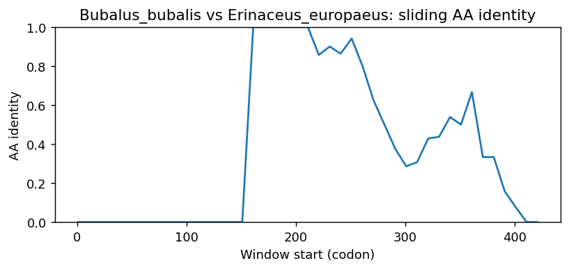
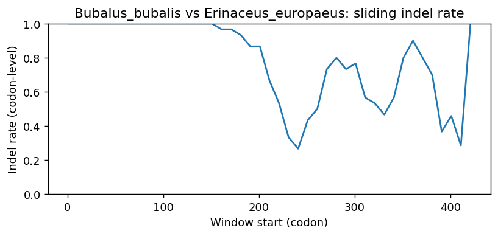
Bubalus_bubalis vs Carcharodon_carcharias
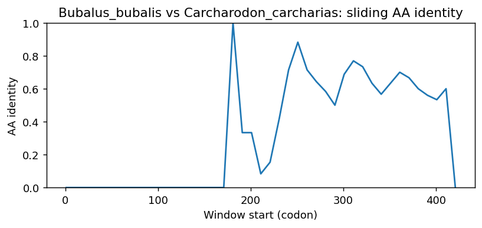
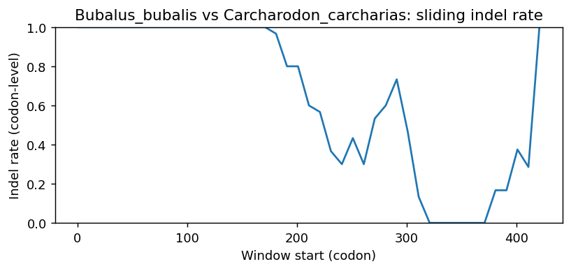
Bubalus_bubalis vs Rhinatrema_bivittatum
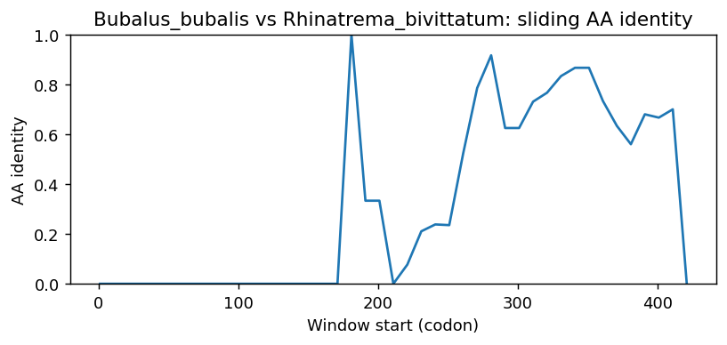
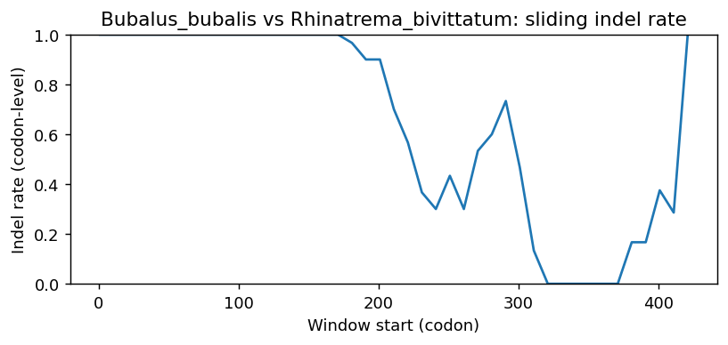
Bubalus_bubalis vs Erpetoichthys_calabaricus
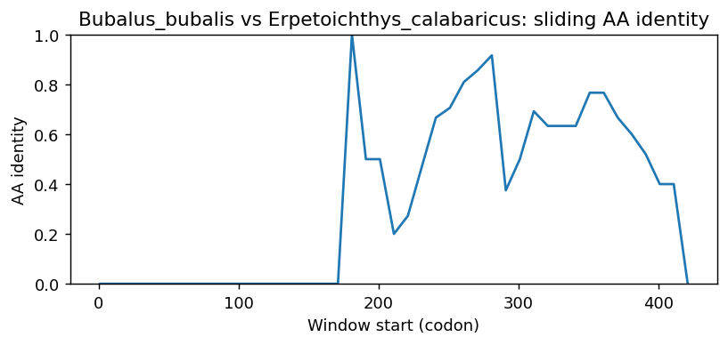
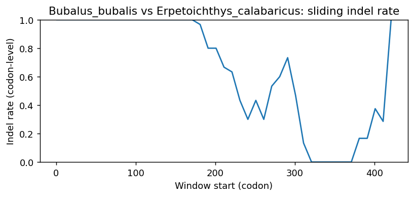
Bubalus_bubalis vs Heterodontus_francisci
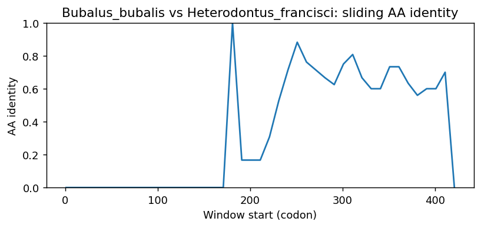
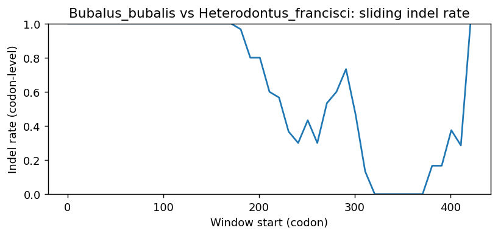
Bubalus_bubalis vs Polypterus_senegalus
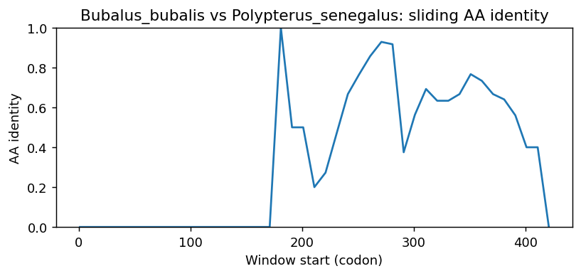
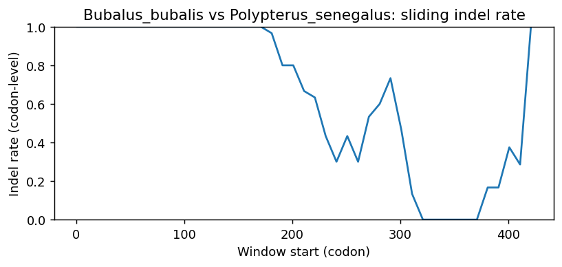
Methods (brief)
- CDS are translated (genetic code 1); proteins aligned by MAFFT when available, otherwise a progressive global aligner (BLOSUM62). Protein MSA is back-translated into a codon MSA.
- Pairwise metrics: AA/NT identities on aligned nongap positions; Ts/Tv; single-hit syn/nonsyn counts; gap events and largest contiguous gap cluster (codons); sliding-window AA identity and codon-level indel rate.
- Per-sequence diagnostics: GC content/skew, CpG density, AA low-complexity fraction via SEG-like entropy windows (win=12, H<2.2), and NT tandem repeats (homopolymers =5; di-nt =4 copies; tri-nt =3 copies).
- Correlations: Pearson/Spearman between AA identity and |GC difference|, mean AA LCR fraction, and mean NT repeat fraction across pairs.
- Risk classifier: combines identity, coverage, longest identical block, low-ID windows, max indel cluster, and up-ranks risk when mean LCR =0.25 or mean repeat =0.10 (soft-masking can remove seeds and reduce sensitivity).
Artifacts: pairwise_metrics.csv, per_sequence_composition.csv, correlations.csv, alignment_protein.faa, alignment_codon.fna.